Iozone results for freread, data are arranged by block size
- Baseline data set
- ./ext4/ext4_1.iozone
- ./ext4/ext4_2.iozone
- ./ext4/ext4_3.iozone
- ./ext4/ext4_4.iozone
- ./ext4/ext4_5.iozone
- Investigated data set
- ./xfs/xfs1.iozone
- ./xfs/xfs2.iozone
- ./xfs/xfs3.iozone
- ./xfs/xfs4.iozone
- ./xfs/xfs5.iozone
mean => Arithmetic mean
standar dev. => Sample standard deviation
ci. max 90%, ci.min => confidence interval at confidence level 90% => it means that mean value of the distribution lies with 90% propability in interval ci_min-ci_max
geom. mean => Geometric mean
median => Second quartile = cuts data set in half = 50th percentile
first quartile => cuts off lowest 25% of data = 25th percentile
third quartile => cuts off highest 25% of data, or lowest 75% = 75th percentile
minimum => Lowest value of data set
maximum => Hightest value of data set
baseline set1 difference => Difference of medians of both sets in percennt. Arithmetic means are used in detail mode instead.
ttest p-value => Student's t-test p-value = probability the both data sets are equal
ttest equality => If p-value is higher than 0.1, data sets are considered being equal with 90% probability. Otherwise the data sets are considered being different.
Linear regression of all results regression line is in y = ax form, b coeficient is zero.
for details about operations performed see Iozone documentation
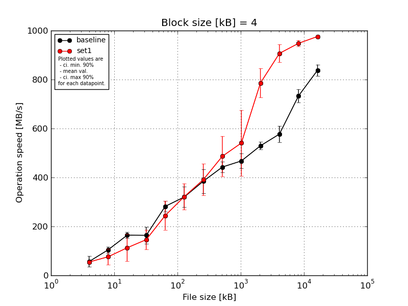
|
Block size [kB] |
File size [kB] |
| 4 |
8 |
16 |
32 |
64 |
128 |
256 |
512 |
1024 |
2048 |
4096 |
8192 |
16384 |
| baseline | 4 | 66.38 | 97.87 | 175.79 | 190.57 | 307.75 | 358.17 | 411.88 | 466.36 | 493.34 | 551.42 | 630.61 | 777.16 | 879.51 |
| 4 | 15.58 | 124.21 | 154.64 | 173.65 | 265.92 | 369.79 | 362.85 | 439.4 | 486.14 | 518.4 | 580.55 | 717.04 | 822.92 |
| 4 | 67.48 | 105.77 | 169.87 | 198.95 | 304.89 | 308.62 | 459.54 | 426.96 | 492.88 | 520.81 | 561.47 | 705.03 | 840.12 |
| 4 | 70.99 | 88.85 | 147.34 | 141.42 | 265.92 | 302.57 | 325.06 | 464.61 | 436.28 | 513.89 | 536.19 | 725.75 | 826.02 |
| 4 | 62.11 | 105.77 | 173.46 | 113.21 | 265.92 | 262.04 | 363.99 | 416.03 | 429.4 | 542.43 | 577.63 | 740.39 | 821.02 |
| mean val. |
56.51 |
104.49 |
164.22 |
163.56 |
282.08 |
320.24 |
384.66 |
442.67 |
467.61 |
529.39 |
577.29 |
733.08 |
837.92 |
| standard dev. |
23.1 |
13.04 |
12.53 |
35.74 |
22.15 |
43.96 |
51.97 |
22.41 |
31.96 |
16.51 |
34.62 |
27.81 |
24.43 |
| ci. min. 90% |
34.48 |
92.06 |
152.27 |
129.49 |
260.96 |
278.33 |
335.12 |
421.3 |
437.14 |
513.65 |
544.29 |
706.56 |
814.63 |
| ci. max 90% |
78.53 |
116.93 |
176.17 |
197.63 |
303.2 |
362.14 |
434.21 |
464.04 |
498.08 |
545.13 |
610.29 |
759.59 |
861.2 |
| geom. mean |
49.84 |
103.86 |
163.83 |
160.17 |
281.39 |
317.78 |
381.92 |
442.22 |
466.72 |
529.18 |
576.47 |
732.66 |
837.64 |
| median |
66.38 |
105.77 |
169.87 |
173.65 |
265.92 |
308.62 |
363.99 |
439.4 |
486.14 |
520.81 |
577.63 |
725.75 |
826.02 |
| first quartile |
62.11 |
97.87 |
154.64 |
141.42 |
265.92 |
302.57 |
362.85 |
426.96 |
436.28 |
518.4 |
561.47 |
717.04 |
822.92 |
| third quartile |
67.48 |
105.77 |
173.46 |
190.57 |
304.89 |
358.17 |
411.88 |
464.61 |
492.88 |
542.43 |
580.55 |
740.39 |
840.12 |
| minimum |
15.58 |
88.85 |
147.34 |
113.21 |
265.92 |
262.04 |
325.06 |
416.03 |
429.4 |
513.89 |
536.19 |
705.03 |
821.02 |
| maximum |
70.99 |
124.21 |
175.79 |
198.95 |
307.75 |
369.79 |
459.54 |
466.36 |
493.34 |
551.42 |
630.61 |
777.16 |
879.51 |
| set1 | 4 | 61.87 | 108.57 | 173.46 | 184.92 | 306.31 | 419.5 | 495.12 | 632.85 | 790.51 | 863.58 | 957.61 | 958.43 | 977.82 |
| 4 | 58.35 | 40.51 | 164.33 | 125.45 | 307.75 | 277.14 | 367.69 | 459.12 | 495.03 | 745.67 | 854.85 | 956.03 | 975.14 |
| 4 | 44.42 | 40.02 | 52.94 | 88.28 | 172.14 | 299.11 | 313.21 | 404.87 | 495.32 | 709.23 | 911.81 | 939.19 | 981.77 |
| 4 | 53.58 | 84.06 | 120.07 | 189.19 | 238.57 | 300.48 | 371.99 | 475.24 | 454.53 | 830.9 | 920.17 | 928.74 | 974.12 |
| 4 | 55.02 | 107.15 | 53.33 | 142.04 | 198.92 | 312.48 | 407.72 | 460.83 | 468.59 | 779.41 | 890.66 | 957.39 | 971.17 |
| mean val. |
54.65 |
76.06 |
112.83 |
145.97 |
244.74 |
321.74 |
391.15 |
486.58 |
540.8 |
785.75 |
907.02 |
947.96 |
976.01 |
| standard dev. |
6.55 |
34.1 |
58.11 |
42.28 |
61.58 |
56.11 |
67.22 |
86.05 |
140.69 |
62.45 |
37.9 |
13.32 |
4.01 |
| ci. min. 90% |
48.4 |
43.56 |
57.43 |
105.67 |
186.03 |
268.24 |
327.06 |
404.54 |
406.66 |
726.22 |
870.89 |
935.26 |
972.19 |
| ci. max 90% |
60.89 |
108.57 |
168.23 |
186.28 |
303.45 |
375.24 |
455.24 |
568.62 |
674.93 |
845.29 |
943.15 |
960.66 |
979.83 |
| geom. mean |
54.31 |
69.19 |
99.32 |
140.64 |
238.4 |
318.26 |
386.71 |
481.06 |
528.64 |
783.77 |
906.39 |
947.88 |
976.0 |
| median |
55.02 |
84.06 |
120.07 |
142.04 |
238.57 |
300.48 |
371.99 |
460.83 |
495.03 |
779.41 |
911.81 |
956.03 |
975.14 |
| first quartile |
53.58 |
40.51 |
53.33 |
125.45 |
198.92 |
299.11 |
367.69 |
459.12 |
468.59 |
745.67 |
890.66 |
939.19 |
974.12 |
| third quartile |
58.35 |
107.15 |
164.33 |
184.92 |
306.31 |
312.48 |
407.72 |
475.24 |
495.32 |
830.9 |
920.17 |
957.39 |
977.82 |
| minimum |
44.42 |
40.02 |
52.94 |
88.28 |
172.14 |
277.14 |
313.21 |
404.87 |
454.53 |
709.23 |
854.85 |
928.74 |
971.17 |
| maximum |
61.87 |
108.57 |
173.46 |
189.19 |
307.75 |
419.5 |
495.12 |
632.85 |
790.51 |
863.58 |
957.61 |
958.43 |
981.77 |
| baseline set1 difference |
-3.29 % |
-27.21 % |
-31.29 % |
-10.75 % |
-13.24 % |
0.47 % |
1.69 % |
9.92 % |
15.65 % |
48.43 % |
57.12 % |
29.31 % |
16.48 % |
| ttest p-value |
0.8668 |
0.1198 |
0.0893 |
0.4977 |
0.2378 |
0.9635 |
0.8688 |
0.3016 |
0.2895 |
0.0 |
0.0 |
0.0 |
0.0 |
| ttest equality |
SAME |
SAME |
DIFF |
SAME |
SAME |
SAME |
SAME |
SAME |
SAME |
DIFF |
DIFF |
DIFF |
DIFF |
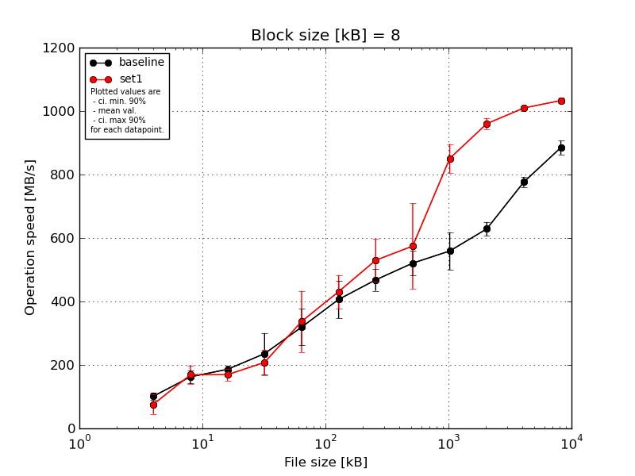
|
Block size [kB] |
File size [kB] |
| 8 |
16 |
32 |
64 |
128 |
256 |
512 |
1024 |
2048 |
4096 |
8192 |
16384 |
| baseline | 8 | 105.43 | 190.62 | 199.26 | 303.48 | 280.4 | 492.1 | 510.28 | 556.51 | 618.41 | 663.45 | 802.64 | 916.01 |
| 8 | 90.82 | 161.1 | 174.57 | 238.57 | 253.06 | 357.66 | 423.34 | 550.95 | 528.12 | 615.66 | 759.51 | 864.68 |
| 8 | 104.09 | 168.12 | 184.92 | 302.08 | 370.83 | 372.52 | 498.99 | 543.18 | 601.86 | 634.4 | 776.71 | 898.98 |
| 8 | 118.38 | 164.33 | 174.57 | 165.31 | 296.91 | 357.17 | 448.89 | 474.59 | 580.86 | 603.61 | 779.05 | 860.49 |
| 8 | 88.85 | 129.06 | 197.75 | 168.49 | 394.26 | 452.79 | 458.71 | 478.7 | 466.09 | 626.86 | 764.08 | 884.36 |
| mean val. |
101.51 |
162.65 |
186.22 |
235.58 |
319.09 |
406.45 |
468.04 |
520.79 |
559.07 |
628.8 |
776.4 |
884.91 |
| standard dev. |
12.05 |
22.06 |
12.0 |
67.97 |
60.57 |
62.14 |
36.03 |
40.6 |
62.11 |
22.6 |
16.83 |
23.3 |
| ci. min. 90% |
90.02 |
141.62 |
174.78 |
170.78 |
261.34 |
347.21 |
433.69 |
482.08 |
499.85 |
607.25 |
760.36 |
862.7 |
| ci. max 90% |
113.0 |
183.67 |
197.65 |
300.39 |
376.84 |
465.69 |
502.4 |
559.49 |
618.28 |
650.34 |
792.44 |
907.12 |
| geom. mean |
100.95 |
161.39 |
185.91 |
227.48 |
314.57 |
402.8 |
466.93 |
519.5 |
556.17 |
628.47 |
776.26 |
884.66 |
| median |
104.09 |
164.33 |
184.92 |
238.57 |
296.91 |
372.52 |
458.71 |
543.18 |
580.86 |
626.86 |
776.71 |
884.36 |
| first quartile |
90.82 |
161.1 |
174.57 |
168.49 |
280.4 |
357.66 |
448.89 |
478.7 |
528.12 |
615.66 |
764.08 |
864.68 |
| third quartile |
105.43 |
168.12 |
197.75 |
302.08 |
370.83 |
452.79 |
498.99 |
550.95 |
601.86 |
634.4 |
779.05 |
898.98 |
| minimum |
88.85 |
129.06 |
174.57 |
165.31 |
253.06 |
357.17 |
423.34 |
474.59 |
466.09 |
603.61 |
759.51 |
860.49 |
| maximum |
118.38 |
190.62 |
199.26 |
303.48 |
394.26 |
492.1 |
510.28 |
556.51 |
618.41 |
663.45 |
802.64 |
916.01 |
| set1 | 8 | 97.58 | 185.76 | 185.97 | 177.63 | 492.38 | 483.48 | 654.38 | 825.84 | 925.91 | 985.46 | 1011.11 | 1025.65 |
| 8 | 36.87 | 190.62 | 148.81 | 225.63 | 383.31 | 381.74 | 497.57 | 494.1 | 843.52 | 953.97 | 1014.99 | 1025.85 |
| 8 | 46.76 | 118.34 | 187.3 | 241.21 | 296.07 | 469.83 | 507.19 | 527.66 | 793.64 | 947.45 | 1009.83 | 1044.38 |
| 8 | 107.15 | 185.76 | 146.81 | 150.93 | 249.92 | 456.93 | 482.13 | 512.58 | 839.3 | 972.32 | 1006.92 | 1039.97 |
| 8 | 92.09 | 164.33 | 177.41 | 245.27 | 263.22 | 362.35 | 507.56 | 512.83 | 850.7 | 942.07 | 1005.05 | 1030.2 |
| mean val. |
76.09 |
168.96 |
169.26 |
208.13 |
336.98 |
430.87 |
529.77 |
574.6 |
850.61 |
960.25 |
1009.58 |
1033.21 |
| standard dev. |
31.94 |
30.07 |
19.96 |
41.78 |
101.23 |
54.94 |
70.42 |
140.95 |
47.68 |
18.13 |
3.85 |
8.53 |
| ci. min. 90% |
45.64 |
140.29 |
150.23 |
168.3 |
240.47 |
378.49 |
462.63 |
440.22 |
805.15 |
942.97 |
1005.91 |
1025.08 |
| ci. max 90% |
106.55 |
197.63 |
188.29 |
247.96 |
433.49 |
483.25 |
596.9 |
708.98 |
896.07 |
977.54 |
1013.25 |
1041.34 |
| geom. mean |
69.83 |
166.49 |
168.29 |
204.52 |
325.89 |
427.97 |
526.38 |
563.07 |
849.56 |
960.12 |
1009.57 |
1033.18 |
| median |
92.09 |
185.76 |
177.41 |
225.63 |
296.07 |
456.93 |
507.19 |
512.83 |
843.52 |
953.97 |
1009.83 |
1030.2 |
| first quartile |
46.76 |
164.33 |
148.81 |
177.63 |
263.22 |
381.74 |
497.57 |
512.58 |
839.3 |
947.45 |
1006.92 |
1025.85 |
| third quartile |
97.58 |
185.76 |
185.97 |
241.21 |
383.31 |
469.83 |
507.56 |
527.66 |
850.7 |
972.32 |
1011.11 |
1039.97 |
| minimum |
36.87 |
118.34 |
146.81 |
150.93 |
249.92 |
362.35 |
482.13 |
494.1 |
793.64 |
942.07 |
1005.05 |
1025.65 |
| maximum |
107.15 |
190.62 |
187.3 |
245.27 |
492.38 |
483.48 |
654.38 |
825.84 |
925.91 |
985.46 |
1014.99 |
1044.38 |
| baseline set1 difference |
-25.04 % |
3.88 % |
-9.11 % |
-11.65 % |
5.61 % |
6.01 % |
13.19 % |
10.33 % |
52.15 % |
52.71 % |
30.03 % |
16.76 % |
| ttest p-value |
0.1345 |
0.7149 |
0.1421 |
0.4638 |
0.7433 |
0.5288 |
0.1192 |
0.4358 |
0.0 |
0.0 |
0.0 |
0.0 |
| ttest equality |
SAME |
SAME |
SAME |
SAME |
SAME |
SAME |
SAME |
SAME |
DIFF |
DIFF |
DIFF |
DIFF |
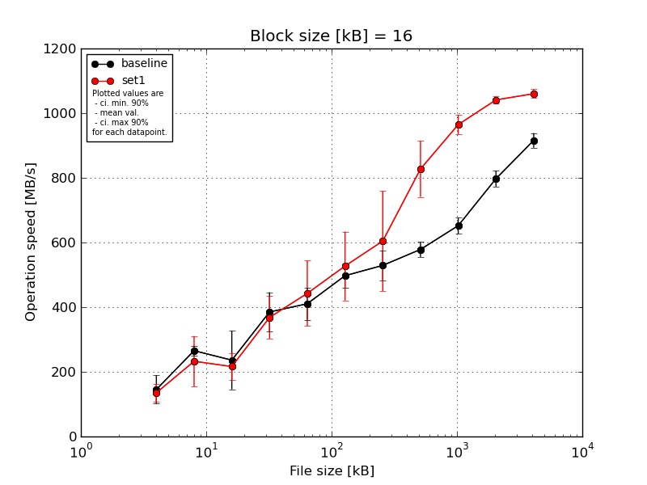
|
Block size [kB] |
File size [kB] |
| 16 |
32 |
64 |
128 |
256 |
512 |
1024 |
2048 |
4096 |
8192 |
16384 |
| baseline | 16 | 173.92 | 256.1 | 90.84 | 463.23 | 483.48 | 495.45 | 610.9 | 606.25 | 687.29 | 821.61 | 952.14 |
| 16 | 154.64 | 289.47 | 320.54 | 400.58 | 420.81 | 545.88 | 485.69 | 541.84 | 661.59 | 798.73 | 897.77 |
| 16 | 65.09 | 271.48 | 247.12 | 368.75 | 423.7 | 480.36 | 529.66 | 585.31 | 639.6 | 794.98 | 927.91 |
| 16 | 175.79 | 249.75 | 204.99 | 404.6 | 345.29 | 444.9 | 507.86 | 589.09 | 616.61 | 815.5 | 900.65 |
| 16 | 157.61 | 260.68 | 317.06 | 288.58 | 379.95 | 519.76 | 512.26 | 570.12 | 655.75 | 756.07 | 901.11 |
| mean val. |
145.41 |
265.5 |
236.11 |
385.15 |
410.64 |
497.27 |
529.27 |
578.52 |
652.17 |
797.38 |
915.91 |
| standard dev. |
45.88 |
15.57 |
94.7 |
63.85 |
51.94 |
38.41 |
48.25 |
24.2 |
26.26 |
25.64 |
23.65 |
| ci. min. 90% |
101.67 |
250.65 |
145.82 |
324.27 |
361.12 |
460.65 |
483.28 |
555.45 |
627.14 |
772.94 |
893.36 |
| ci. max 90% |
189.16 |
280.34 |
326.4 |
446.03 |
460.17 |
533.89 |
575.27 |
601.6 |
677.2 |
821.82 |
938.47 |
| geom. mean |
137.14 |
265.14 |
215.77 |
380.63 |
408.02 |
496.07 |
527.61 |
578.11 |
651.74 |
797.04 |
915.67 |
| median |
157.61 |
260.68 |
247.12 |
400.58 |
420.81 |
495.45 |
512.26 |
585.31 |
655.75 |
798.73 |
901.11 |
| first quartile |
154.64 |
256.1 |
204.99 |
368.75 |
379.95 |
480.36 |
507.86 |
570.12 |
639.6 |
794.98 |
900.65 |
| third quartile |
173.92 |
271.48 |
317.06 |
404.6 |
423.7 |
519.76 |
529.66 |
589.09 |
661.59 |
815.5 |
927.91 |
| minimum |
65.09 |
249.75 |
90.84 |
288.58 |
345.29 |
444.9 |
485.69 |
541.84 |
616.61 |
756.07 |
897.77 |
| maximum |
175.79 |
289.47 |
320.54 |
463.23 |
483.48 |
545.88 |
610.9 |
606.25 |
687.29 |
821.61 |
952.14 |
| set1 | 16 | 153.19 | 298.02 | 171.25 | 404.6 | 617.24 | 725.71 | 892.06 | 963.9 | 923.56 | 1034.65 | 1068.22 |
| 16 | 159.14 | 247.86 | 165.31 | 262.56 | 331.11 | 465.54 | 530.53 | 765.68 | 1001.22 | 1026.29 | 1061.42 |
| 16 | 154.64 | 105.55 | 245.96 | 444.76 | 410.59 | 498.04 | 501.54 | 876.84 | 940.75 | 1042.88 | 1076.34 |
| 16 | 100.08 | 205.5 | 251.14 | 348.18 | 447.19 | 468.13 | 538.16 | 752.76 | 986.21 | 1046.16 | 1057.63 |
| 16 | 108.54 | 306.38 | 248.05 | 381.08 | 407.24 | 478.5 | 560.53 | 778.18 | 971.81 | 1055.28 | 1037.55 |
| mean val. |
135.12 |
232.66 |
216.34 |
368.24 |
442.68 |
527.18 |
604.56 |
827.47 |
964.71 |
1041.05 |
1060.23 |
| standard dev. |
28.37 |
81.9 |
43.97 |
68.76 |
106.33 |
111.71 |
162.09 |
90.66 |
32.07 |
11.08 |
14.54 |
| ci. min. 90% |
108.07 |
154.58 |
174.42 |
302.68 |
341.3 |
420.68 |
450.03 |
741.03 |
934.14 |
1030.49 |
1046.37 |
| ci. max 90% |
162.16 |
310.75 |
258.26 |
433.79 |
544.05 |
633.69 |
759.1 |
913.91 |
995.28 |
1051.61 |
1074.1 |
| geom. mean |
132.57 |
217.87 |
212.54 |
362.61 |
433.35 |
519.09 |
590.18 |
823.66 |
964.28 |
1041.0 |
1060.15 |
| median |
153.19 |
247.86 |
245.96 |
381.08 |
410.59 |
478.5 |
538.16 |
778.18 |
971.81 |
1042.88 |
1061.42 |
| first quartile |
108.54 |
205.5 |
171.25 |
348.18 |
407.24 |
468.13 |
530.53 |
765.68 |
940.75 |
1034.65 |
1057.63 |
| third quartile |
154.64 |
298.02 |
248.05 |
404.6 |
447.19 |
498.04 |
560.53 |
876.84 |
986.21 |
1046.16 |
1068.22 |
| minimum |
100.08 |
105.55 |
165.31 |
262.56 |
331.11 |
465.54 |
501.54 |
752.76 |
923.56 |
1026.29 |
1037.55 |
| maximum |
159.14 |
306.38 |
251.14 |
444.76 |
617.24 |
725.71 |
892.06 |
963.9 |
1001.22 |
1055.28 |
1076.34 |
| baseline set1 difference |
-7.08 % |
-12.37 % |
-8.37 % |
-4.39 % |
7.8 % |
6.02 % |
14.23 % |
43.03 % |
47.92 % |
30.56 % |
15.76 % |
| ttest p-value |
0.6809 |
0.4042 |
0.6832 |
0.6975 |
0.5618 |
0.5868 |
0.3487 |
0.0003 |
0.0 |
0.0 |
0.0 |
| ttest equality |
SAME |
SAME |
SAME |
SAME |
SAME |
SAME |
SAME |
DIFF |
DIFF |
DIFF |
DIFF |
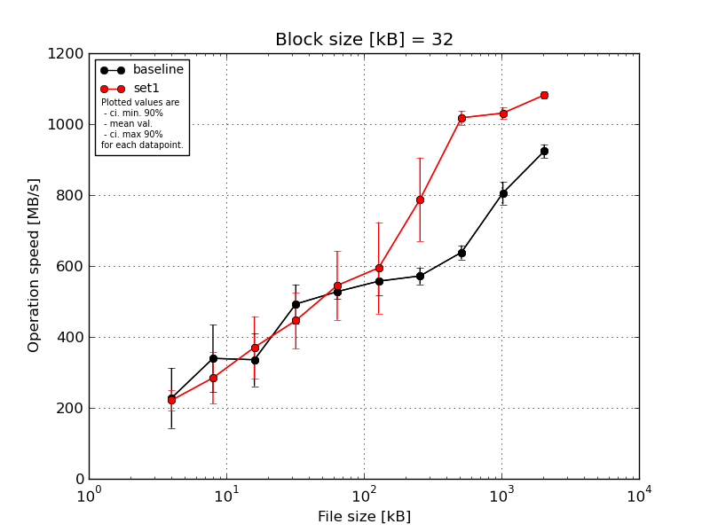
|
Block size [kB] |
File size [kB] |
| 32 |
64 |
128 |
256 |
512 |
1024 |
2048 |
4096 |
8192 |
16384 |
| baseline | 32 | 269.25 | 411.01 | 440.28 | 512.3 | 537.07 | 596.73 | 576.5 | 668.34 | 862.43 | 956.42 |
| 32 | 252.16 | 170.24 | 310.26 | 393.64 | 492.2 | 541.7 | 553.38 | 645.9 | 790.43 | 920.44 |
| 32 | 281.39 | 414.26 | 267.11 | 545.9 | 547.59 | 600.66 | 608.85 | 616.52 | 795.79 | 917.69 |
| 32 | 70.06 | 353.39 | 394.26 | 502.96 | 519.76 | 542.61 | 544.97 | 640.72 | 805.4 | 922.83 |
| 32 | 267.05 | 349.15 | 266.57 | 509.07 | 541.79 | 504.32 | 576.35 | 621.13 | 774.36 | 902.38 |
| mean val. |
227.98 |
339.61 |
335.7 |
492.77 |
527.68 |
557.21 |
572.01 |
638.52 |
805.68 |
923.95 |
| standard dev. |
88.89 |
99.54 |
78.26 |
57.88 |
22.39 |
40.93 |
24.87 |
20.83 |
33.66 |
19.83 |
| ci. min. 90% |
143.24 |
244.71 |
261.09 |
437.59 |
506.33 |
518.18 |
548.3 |
618.67 |
773.59 |
905.05 |
| ci. max 90% |
312.73 |
434.51 |
410.31 |
547.96 |
549.03 |
596.23 |
595.72 |
658.38 |
837.77 |
942.85 |
| geom. mean |
204.48 |
324.11 |
328.66 |
489.79 |
527.29 |
556.0 |
571.58 |
638.25 |
805.13 |
923.78 |
| median |
267.05 |
353.39 |
310.26 |
509.07 |
537.07 |
542.61 |
576.35 |
640.72 |
795.79 |
920.44 |
| first quartile |
252.16 |
349.15 |
267.11 |
502.96 |
519.76 |
541.7 |
553.38 |
621.13 |
790.43 |
917.69 |
| third quartile |
269.25 |
411.01 |
394.26 |
512.3 |
541.79 |
596.73 |
576.5 |
645.9 |
805.4 |
922.83 |
| minimum |
70.06 |
170.24 |
266.57 |
393.64 |
492.2 |
504.32 |
544.97 |
616.52 |
774.36 |
902.38 |
| maximum |
281.39 |
414.26 |
440.28 |
545.9 |
547.59 |
600.66 |
608.85 |
668.34 |
862.43 |
956.42 |
| set1 | 32 | 231.25 | 355.3 | 486.44 | 573.37 | 725.71 | 836.05 | 1002.49 | 990.34 | 1043.95 | 1099.27 |
| 32 | 202.96 | 192.78 | 274.81 | 464.63 | 515.42 | 552.48 | 727.05 | 1035.2 | 1020.55 | 1080.94 |
| 32 | 201.4 | 367.25 | 419.16 | 448.91 | 484.58 | 528.26 | 700.29 | 1034.37 | 1055.11 | 1081.08 |
| 32 | 269.8 | 277.75 | 393.08 | 367.69 | 512.27 | 529.06 | 727.56 | 1001.76 | 1022.63 | 1078.61 |
| 32 | 201.71 | 230.6 | 279.05 | 377.08 | 487.84 | 528.0 | 782.17 | 1028.03 | 1013.03 | 1070.37 |
| mean val. |
221.42 |
284.74 |
370.51 |
446.33 |
545.16 |
594.77 |
787.91 |
1017.94 |
1031.05 |
1082.05 |
| standard dev. |
29.86 |
76.2 |
91.98 |
82.86 |
101.88 |
135.28 |
123.59 |
20.57 |
17.69 |
10.57 |
| ci. min. 90% |
192.95 |
212.09 |
282.82 |
367.34 |
448.03 |
465.79 |
670.08 |
998.32 |
1014.19 |
1071.98 |
| ci. max 90% |
249.9 |
357.38 |
458.2 |
525.33 |
642.3 |
723.75 |
905.74 |
1037.55 |
1047.92 |
1092.13 |
| geom. mean |
219.92 |
276.33 |
361.18 |
440.48 |
538.54 |
584.4 |
780.94 |
1017.77 |
1030.93 |
1082.01 |
| median |
202.96 |
277.75 |
393.08 |
448.91 |
512.27 |
529.06 |
727.56 |
1028.03 |
1022.63 |
1080.94 |
| first quartile |
201.71 |
230.6 |
279.05 |
377.08 |
487.84 |
528.26 |
727.05 |
1001.76 |
1020.55 |
1078.61 |
| third quartile |
231.25 |
355.3 |
419.16 |
464.63 |
515.42 |
552.48 |
782.17 |
1034.37 |
1043.95 |
1081.08 |
| minimum |
201.4 |
192.78 |
274.81 |
367.69 |
484.58 |
528.0 |
700.29 |
990.34 |
1013.03 |
1070.37 |
| maximum |
269.8 |
367.25 |
486.44 |
573.37 |
725.71 |
836.05 |
1002.49 |
1035.2 |
1055.11 |
1099.27 |
| baseline set1 difference |
-2.88 % |
-16.16 % |
10.37 % |
-9.42 % |
3.31 % |
6.74 % |
37.74 % |
59.42 % |
27.97 % |
17.11 % |
| ttest p-value |
0.8796 |
0.3563 |
0.5372 |
0.3343 |
0.7176 |
0.5687 |
0.005 |
0.0 |
0.0 |
0.0 |
| ttest equality |
SAME |
SAME |
SAME |
SAME |
SAME |
SAME |
DIFF |
DIFF |
DIFF |
DIFF |
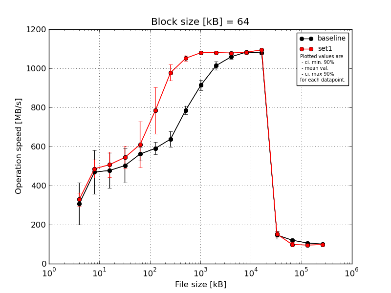
|
Block size [kB] |
File size [kB] |
| 64 |
128 |
256 |
512 |
1024 |
2048 |
4096 |
8192 |
16384 |
32768 |
65536 |
131072 |
262144 |
524288 |
1048576 |
2097152 |
4194304 |
| baseline | 64 | 402.8 | 548.53 | 614.35 | 628.3 | 569.82 | 637.34 | 709.46 | 818.5 | 952.5 | 1050.46 | 1072.19 | 1076.66 | 1086.35 | 115.67 | 120.23 | 105.9 | 100.55 |
| 64 | 351.02 | 282.21 | 403.33 | 372.57 | 538.5 | 568.8 | 603.5 | 776.92 | 925.17 | 1020.18 | 1064.54 | 1091.27 | 1084.78 | 152.6 | 117.7 | 106.4 | 100.39 |
| 64 | 378.38 | 543.41 | 478.84 | 518.1 | 619.19 | 609.96 | 624.62 | 794.06 | 899.33 | 1000.87 | 1056.8 | 1089.24 | 1078.29 | 163.52 | 121.97 | 105.14 | 100.04 |
| 64 | 124.01 | 548.53 | 374.25 | 495.57 | 543.81 | 579.73 | 628.72 | 755.36 | 878.21 | 1001.57 | 1041.09 | 1075.8 | 1070.34 | 162.31 | 121.93 | 105.73 | 100.4 |
| 64 | 278.93 | 422.54 | 516.59 | 497.45 | 536.44 | 556.02 | 622.37 | 785.54 | 916.13 | 997.84 | 1064.25 | 1084.78 | 1075.44 | 140.61 | 120.62 | 106.73 | 100.79 |
| mean val. |
307.03 |
469.04 |
477.47 |
502.4 |
561.55 |
590.37 |
637.73 |
786.08 |
914.27 |
1014.18 |
1059.78 |
1083.55 |
1079.04 |
146.94 |
120.49 |
105.98 |
100.44 |
| standard dev. |
112.34 |
117.51 |
95.42 |
90.86 |
34.88 |
32.97 |
41.25 |
23.15 |
27.87 |
22.11 |
11.78 |
7.09 |
6.63 |
19.75 |
1.74 |
0.62 |
0.27 |
| ci. min. 90% |
199.92 |
357.01 |
386.5 |
415.77 |
528.29 |
558.94 |
598.41 |
764.01 |
887.69 |
993.11 |
1048.55 |
1076.79 |
1072.72 |
128.11 |
118.83 |
105.39 |
100.17 |
| ci. max 90% |
414.13 |
581.08 |
568.44 |
589.02 |
594.81 |
621.81 |
677.06 |
808.15 |
940.84 |
1035.26 |
1071.0 |
1090.31 |
1085.36 |
165.78 |
122.15 |
106.57 |
100.7 |
| geom. mean |
284.1 |
454.98 |
470.02 |
495.6 |
560.72 |
589.65 |
636.72 |
785.81 |
913.93 |
1013.99 |
1059.72 |
1083.53 |
1079.03 |
145.79 |
120.48 |
105.98 |
100.44 |
| median |
351.02 |
543.41 |
478.84 |
497.45 |
543.81 |
579.73 |
624.62 |
785.54 |
916.13 |
1001.57 |
1064.25 |
1084.78 |
1078.29 |
152.6 |
120.62 |
105.9 |
100.4 |
| first quartile |
278.93 |
422.54 |
403.33 |
495.57 |
538.5 |
568.8 |
622.37 |
776.92 |
899.33 |
1000.87 |
1056.8 |
1076.66 |
1075.44 |
140.61 |
120.23 |
105.73 |
100.39 |
| third quartile |
378.38 |
548.53 |
516.59 |
518.1 |
569.82 |
609.96 |
628.72 |
794.06 |
925.17 |
1020.18 |
1064.54 |
1089.24 |
1084.78 |
162.31 |
121.93 |
106.4 |
100.55 |
| minimum |
124.01 |
282.21 |
374.25 |
372.57 |
536.44 |
556.02 |
603.5 |
755.36 |
878.21 |
997.84 |
1041.09 |
1075.8 |
1070.34 |
115.67 |
117.7 |
105.14 |
100.04 |
| maximum |
402.8 |
548.53 |
614.35 |
628.3 |
619.19 |
637.34 |
709.46 |
818.5 |
952.5 |
1050.46 |
1072.19 |
1091.27 |
1086.35 |
163.52 |
121.97 |
106.73 |
100.79 |
| set1 | 64 | 337.9 | 414.19 | 514.56 | 625.86 | 832.07 | 989.13 | 1021.46 | 1063.81 | 1074.69 | 1085.3 | 1075.67 | 1095.45 | 1099.63 | 143.88 | 100.39 | 92.94 | 97.21 |
| 64 | 381.13 | 477.14 | 467.11 | 511.77 | 554.67 | 710.49 | 1010.87 | 1029.98 | 1076.72 | 1073.79 | 1081.04 | 1091.7 | 1094.97 | 152.75 | 80.43 | 106.13 | 96.27 |
| 64 | 318.99 | 478.89 | 414.49 | 590.28 | 556.14 | 816.66 | 917.05 | 1062.29 | 1083.94 | 1090.07 | 1080.28 | 1083.62 | 1093.29 | 177.09 | 97.52 | 91.55 | 96.68 |
| 64 | 280.13 | 514.11 | 574.94 | 493.59 | 553.72 | 704.94 | 991.04 | 1060.01 | 1084.01 | 1074.11 | 1084.78 | 1078.75 | 1092.88 | 150.11 | 114.61 | 92.83 | 99.33 |
| 64 | 325.72 | 545.67 | 564.42 | 499.94 | 554.6 | 698.3 | 950.34 | 1042.2 | 1082.61 | 1081.44 | 1071.29 | 1067.46 | 1090.73 | 136.56 | 97.96 | 94.05 | 98.54 |
| mean val. |
328.77 |
486.0 |
507.1 |
544.29 |
610.24 |
783.9 |
978.15 |
1051.66 |
1080.4 |
1080.94 |
1078.61 |
1083.39 |
1094.3 |
152.08 |
98.18 |
95.5 |
97.61 |
| standard dev. |
36.39 |
49.08 |
67.3 |
59.93 |
124.01 |
124.64 |
43.64 |
14.92 |
4.38 |
7.08 |
5.22 |
11.07 |
3.34 |
15.31 |
12.15 |
6.01 |
1.29 |
| ci. min. 90% |
294.08 |
439.21 |
442.94 |
487.16 |
492.01 |
665.07 |
936.54 |
1037.44 |
1076.22 |
1074.2 |
1073.63 |
1072.84 |
1091.12 |
137.48 |
86.6 |
89.77 |
96.38 |
| ci. max 90% |
363.46 |
532.8 |
571.27 |
601.42 |
728.47 |
902.74 |
1019.76 |
1065.88 |
1084.57 |
1087.69 |
1083.59 |
1093.95 |
1097.48 |
166.68 |
109.77 |
101.23 |
98.84 |
| geom. mean |
327.16 |
483.96 |
503.41 |
541.73 |
601.63 |
776.62 |
977.36 |
1051.57 |
1080.39 |
1080.93 |
1078.6 |
1083.35 |
1094.3 |
151.49 |
97.57 |
95.36 |
97.6 |
| median |
325.72 |
478.89 |
514.56 |
511.77 |
554.67 |
710.49 |
991.04 |
1060.01 |
1082.61 |
1081.44 |
1080.28 |
1083.62 |
1093.29 |
150.11 |
97.96 |
92.94 |
97.21 |
| first quartile |
318.99 |
477.14 |
467.11 |
499.94 |
554.6 |
704.94 |
950.34 |
1042.2 |
1076.72 |
1074.11 |
1075.67 |
1078.75 |
1092.88 |
143.88 |
97.52 |
92.83 |
96.68 |
| third quartile |
337.9 |
514.11 |
564.42 |
590.28 |
556.14 |
816.66 |
1010.87 |
1062.29 |
1083.94 |
1085.3 |
1081.04 |
1091.7 |
1094.97 |
152.75 |
100.39 |
94.05 |
98.54 |
| minimum |
280.13 |
414.19 |
414.49 |
493.59 |
553.72 |
698.3 |
917.05 |
1029.98 |
1074.69 |
1073.79 |
1071.29 |
1067.46 |
1090.73 |
136.56 |
80.43 |
91.55 |
96.27 |
| maximum |
381.13 |
545.67 |
574.94 |
625.86 |
832.07 |
989.13 |
1021.46 |
1063.81 |
1084.01 |
1090.07 |
1084.78 |
1095.45 |
1099.63 |
177.09 |
114.61 |
106.13 |
99.33 |
| baseline set1 difference |
7.08 % |
3.62 % |
6.21 % |
8.34 % |
8.67 % |
32.78 % |
53.38 % |
33.79 % |
18.17 % |
6.58 % |
1.78 % |
-0.01 % |
1.41 % |
3.49 % |
-18.51 % |
-9.89 % |
-2.82 % |
| ttest p-value |
0.6913 |
0.7735 |
0.586 |
0.4145 |
0.4226 |
0.01 |
0.0 |
0.0 |
0.0 |
0.0002 |
0.0114 |
0.9796 |
0.0018 |
0.6582 |
0.0036 |
0.0047 |
0.0014 |
| ttest equality |
SAME |
SAME |
SAME |
SAME |
SAME |
DIFF |
DIFF |
DIFF |
DIFF |
DIFF |
DIFF |
SAME |
DIFF |
SAME |
DIFF |
DIFF |
DIFF |
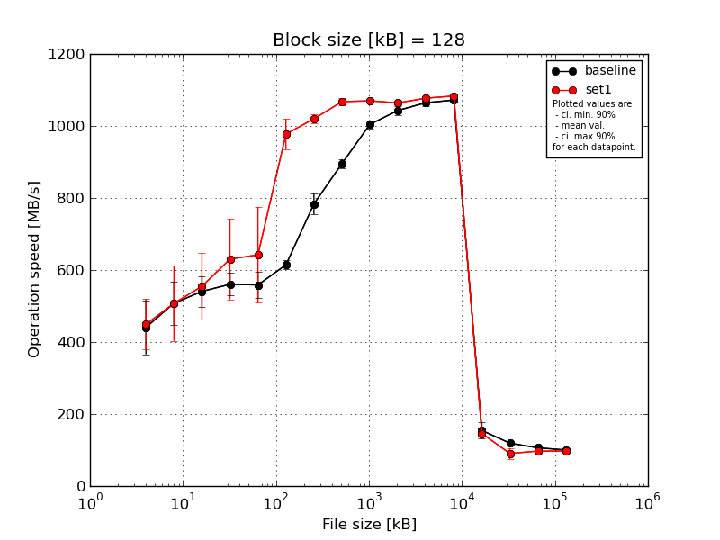
|
Block size [kB] |
File size [kB] |
| 128 |
256 |
512 |
1024 |
2048 |
4096 |
8192 |
16384 |
32768 |
65536 |
131072 |
262144 |
524288 |
1048576 |
2097152 |
4194304 |
| baseline | 128 | 514.11 | 597.89 | 541.79 | 601.26 | 601.51 | 619.39 | 827.04 | 889.93 | 1025.87 | 1043.12 | 1066.71 | 1083.71 | 123.54 | 120.9 | 106.91 | 99.88 |
| 128 | 438.44 | 514.31 | 562.42 | 522.8 | 557.13 | 599.06 | 764.31 | 915.11 | 997.6 | 1051.32 | 1057.68 | 1072.33 | 159.06 | 118.59 | 106.3 | 100.22 |
| 128 | 502.28 | 452.21 | 599.39 | 585.16 | 495.41 | 606.05 | 777.16 | 890.91 | 1000.34 | 1053.05 | 1076.32 | 1068.58 | 190.09 | 117.14 | 104.54 | 100.35 |
| 128 | 432.29 | 446.43 | 479.37 | 557.4 | 565.28 | 633.9 | 800.63 | 879.99 | 997.98 | 1019.93 | 1052.79 | 1065.47 | 148.71 | 122.06 | 106.66 | 100.53 |
| 128 | 316.44 | 527.24 | 520.28 | 535.0 | 573.9 | 613.32 | 748.5 | 900.9 | 999.84 | 1047.82 | 1069.36 | 1069.34 | 151.27 | 117.01 | 107.11 | 100.44 |
| mean val. |
440.71 |
507.61 |
540.65 |
560.32 |
558.65 |
614.34 |
783.53 |
895.37 |
1004.33 |
1043.05 |
1064.57 |
1071.88 |
154.53 |
119.14 |
106.3 |
100.28 |
| standard dev. |
78.58 |
62.03 |
44.99 |
32.98 |
39.1 |
13.33 |
30.91 |
13.29 |
12.1 |
13.47 |
9.38 |
7.05 |
23.93 |
2.26 |
1.03 |
0.25 |
| ci. min. 90% |
365.8 |
448.47 |
497.76 |
528.88 |
521.37 |
601.63 |
754.05 |
882.7 |
992.79 |
1030.21 |
1055.63 |
1065.17 |
131.72 |
116.98 |
105.32 |
100.04 |
| ci. max 90% |
515.63 |
566.76 |
583.54 |
591.77 |
595.93 |
627.05 |
813.0 |
908.04 |
1015.86 |
1055.89 |
1073.51 |
1078.6 |
177.35 |
121.3 |
107.29 |
100.52 |
| geom. mean |
434.51 |
504.65 |
539.14 |
559.55 |
557.51 |
614.23 |
783.04 |
895.29 |
1004.27 |
1042.98 |
1064.54 |
1071.87 |
153.07 |
119.12 |
106.3 |
100.28 |
| median |
438.44 |
514.31 |
541.79 |
557.4 |
565.28 |
613.32 |
777.16 |
890.91 |
999.84 |
1047.82 |
1066.71 |
1069.34 |
151.27 |
118.59 |
106.66 |
100.35 |
| first quartile |
432.29 |
452.21 |
520.28 |
535.0 |
557.13 |
606.05 |
764.31 |
889.93 |
997.98 |
1043.12 |
1057.68 |
1068.58 |
148.71 |
117.14 |
106.3 |
100.22 |
| third quartile |
502.28 |
527.24 |
562.42 |
585.16 |
573.9 |
619.39 |
800.63 |
900.9 |
1000.34 |
1051.32 |
1069.36 |
1072.33 |
159.06 |
120.9 |
106.91 |
100.44 |
| minimum |
316.44 |
446.43 |
479.37 |
522.8 |
495.41 |
599.06 |
748.5 |
879.99 |
997.6 |
1019.93 |
1052.79 |
1065.47 |
123.54 |
117.01 |
104.54 |
99.88 |
| maximum |
514.11 |
597.89 |
599.39 |
601.26 |
601.51 |
633.9 |
827.04 |
915.11 |
1025.87 |
1053.05 |
1076.32 |
1083.71 |
190.09 |
122.06 |
107.11 |
100.53 |
| set1 | 128 | 484.64 | 570.56 | 708.3 | 839.56 | 883.77 | 933.48 | 1008.31 | 1067.09 | 1070.59 | 1070.74 | 1077.11 | 1088.79 | 131.18 | 77.52 | 92.29 | 98.68 |
| 128 | 488.25 | 598.23 | 503.54 | 582.4 | 531.91 | 979.19 | 1007.83 | 1079.77 | 1062.2 | 1064.63 | 1075.79 | 1082.67 | 152.35 | 89.77 | 106.0 | 97.44 |
| 128 | 474.98 | 370.94 | 595.98 | 573.79 | 629.12 | 1049.31 | 1033.09 | 1072.39 | 1078.1 | 1068.98 | 1079.45 | 1086.25 | 149.5 | 82.91 | 101.97 | 93.36 |
| 128 | 317.98 | 590.81 | 491.62 | 576.31 | 591.17 | 975.37 | 1014.44 | 1054.91 | 1072.35 | 1060.15 | 1076.18 | 1075.47 | 155.11 | 118.23 | 92.54 | 97.27 |
| 128 | 480.64 | 407.09 | 474.92 | 578.38 | 575.04 | 949.22 | 1035.48 | 1062.84 | 1065.99 | 1055.3 | 1077.08 | 1083.62 | 142.01 | 84.25 | 93.1 | 99.97 |
| mean val. |
449.3 |
507.52 |
554.87 |
630.09 |
642.2 |
977.31 |
1019.83 |
1067.4 |
1069.85 |
1063.96 |
1077.12 |
1083.36 |
146.03 |
90.54 |
97.18 |
97.34 |
| standard dev. |
73.58 |
109.41 |
97.8 |
117.14 |
139.47 |
44.45 |
13.48 |
9.42 |
6.09 |
6.35 |
1.42 |
5.02 |
9.63 |
16.08 |
6.38 |
2.48 |
| ci. min. 90% |
379.15 |
403.22 |
461.63 |
518.41 |
509.23 |
934.94 |
1006.98 |
1058.42 |
1064.04 |
1057.91 |
1075.77 |
1078.58 |
136.85 |
75.2 |
91.1 |
94.98 |
| ci. max 90% |
519.45 |
611.83 |
648.12 |
741.77 |
775.17 |
1019.69 |
1032.68 |
1076.38 |
1075.65 |
1070.01 |
1078.48 |
1088.14 |
155.21 |
105.87 |
103.26 |
99.71 |
| geom. mean |
443.6 |
497.42 |
548.46 |
622.56 |
631.63 |
976.52 |
1019.76 |
1067.37 |
1069.83 |
1063.94 |
1077.12 |
1083.35 |
145.77 |
89.51 |
97.02 |
97.32 |
| median |
480.64 |
570.56 |
503.54 |
578.38 |
591.17 |
975.37 |
1014.44 |
1067.09 |
1070.59 |
1064.63 |
1077.08 |
1083.62 |
149.5 |
84.25 |
93.1 |
97.44 |
| first quartile |
474.98 |
407.09 |
491.62 |
576.31 |
575.04 |
949.22 |
1008.31 |
1062.84 |
1065.99 |
1060.15 |
1076.18 |
1082.67 |
142.01 |
82.91 |
92.54 |
97.27 |
| third quartile |
484.64 |
590.81 |
595.98 |
582.4 |
629.12 |
979.19 |
1033.09 |
1072.39 |
1072.35 |
1068.98 |
1077.11 |
1086.25 |
152.35 |
89.77 |
101.97 |
98.68 |
| minimum |
317.98 |
370.94 |
474.92 |
573.79 |
531.91 |
933.48 |
1007.83 |
1054.91 |
1062.2 |
1055.3 |
1075.79 |
1075.47 |
131.18 |
77.52 |
92.29 |
93.36 |
| maximum |
488.25 |
598.23 |
708.3 |
839.56 |
883.77 |
1049.31 |
1035.48 |
1079.77 |
1078.1 |
1070.74 |
1079.45 |
1088.79 |
155.11 |
118.23 |
106.0 |
99.97 |
| baseline set1 difference |
1.95 % |
-0.02 % |
2.63 % |
12.45 % |
14.96 % |
59.08 % |
30.16 % |
19.21 % |
6.52 % |
2.0 % |
1.18 % |
1.07 % |
-5.5 % |
-24.01 % |
-8.58 % |
-2.93 % |
| ttest p-value |
0.8629 |
0.9988 |
0.7752 |
0.2358 |
0.2331 |
0.0 |
0.0 |
0.0 |
0.0 |
0.0138 |
0.0182 |
0.018 |
0.4821 |
0.0043 |
0.0135 |
0.0299 |
| ttest equality |
SAME |
SAME |
SAME |
SAME |
SAME |
DIFF |
DIFF |
DIFF |
DIFF |
DIFF |
DIFF |
DIFF |
SAME |
DIFF |
DIFF |
DIFF |
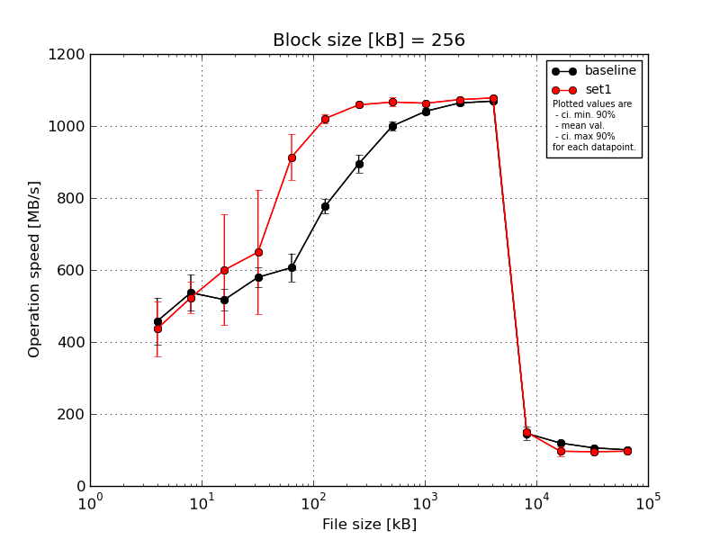
|
Block size [kB] |
File size [kB] |
| 256 |
512 |
1024 |
2048 |
4096 |
8192 |
16384 |
32768 |
65536 |
131072 |
262144 |
524288 |
1048576 |
2097152 |
4194304 |
| baseline | 256 | 536.41 | 591.78 | 537.4 | 598.98 | 666.53 | 804.11 | 920.07 | 1021.88 | 1040.02 | 1062.07 | 1073.57 | 115.02 | 118.85 | 105.21 | 100.32 |
| 256 | 445.67 | 517.71 | 537.61 | 546.6 | 611.8 | 788.96 | 910.85 | 985.59 | 1049.97 | 1055.59 | 1072.68 | 153.82 | 118.38 | 106.12 | 100.01 |
| 256 | 518.63 | 588.29 | 518.72 | 617.45 | 583.17 | 760.89 | 908.63 | 1000.28 | 1050.54 | 1065.96 | 1067.11 | 163.55 | 117.08 | 105.57 | 100.92 |
| 256 | 380.5 | 471.61 | 531.34 | 558.35 | 556.65 | 782.08 | 876.85 | 1000.04 | 1036.63 | 1061.95 | 1063.47 | 144.93 | 121.93 | 106.19 | 100.5 |
| 256 | 407.72 | 515.42 | 462.5 | 577.7 | 615.66 | 750.54 | 859.11 | 992.16 | 1029.06 | 1074.67 | 1068.92 | 153.48 | 120.14 | 106.12 | 100.46 |
| mean val. |
457.79 |
536.96 |
517.51 |
579.82 |
606.76 |
777.32 |
895.1 |
999.99 |
1041.24 |
1064.05 |
1069.15 |
146.16 |
119.28 |
105.84 |
100.44 |
| standard dev. |
68.03 |
51.83 |
31.7 |
28.95 |
41.06 |
21.58 |
25.9 |
13.67 |
9.14 |
7.01 |
4.14 |
18.61 |
1.84 |
0.43 |
0.33 |
| ci. min. 90% |
392.93 |
487.55 |
487.29 |
552.22 |
567.61 |
756.74 |
870.41 |
986.95 |
1032.54 |
1057.37 |
1065.2 |
128.41 |
117.52 |
105.43 |
100.13 |
| ci. max 90% |
522.64 |
586.38 |
547.73 |
607.42 |
645.91 |
797.89 |
919.8 |
1013.03 |
1049.95 |
1070.73 |
1073.09 |
163.91 |
121.04 |
106.26 |
100.76 |
| geom. mean |
453.75 |
534.95 |
516.7 |
579.24 |
605.66 |
777.08 |
894.8 |
999.92 |
1041.21 |
1064.03 |
1069.14 |
145.12 |
119.27 |
105.84 |
100.44 |
| median |
445.67 |
517.71 |
531.34 |
577.7 |
611.8 |
782.08 |
908.63 |
1000.04 |
1040.02 |
1062.07 |
1068.92 |
153.48 |
118.85 |
106.12 |
100.46 |
| first quartile |
407.72 |
515.42 |
518.72 |
558.35 |
583.17 |
760.89 |
876.85 |
992.16 |
1036.63 |
1061.95 |
1067.11 |
144.93 |
118.38 |
105.57 |
100.32 |
| third quartile |
518.63 |
588.29 |
537.4 |
598.98 |
615.66 |
788.96 |
910.85 |
1000.28 |
1049.97 |
1065.96 |
1072.68 |
153.82 |
120.14 |
106.12 |
100.5 |
| minimum |
380.5 |
471.61 |
462.5 |
546.6 |
556.65 |
750.54 |
859.11 |
985.59 |
1029.06 |
1055.59 |
1063.47 |
115.02 |
117.08 |
105.21 |
100.01 |
| maximum |
536.41 |
591.78 |
537.61 |
617.45 |
666.53 |
804.11 |
920.07 |
1021.88 |
1050.54 |
1074.67 |
1073.57 |
163.55 |
121.93 |
106.19 |
100.92 |
| set1 | 256 | 525.13 | 585.5 | 883.42 | 964.23 | 879.92 | 1023.91 | 1050.83 | 1081.52 | 1068.86 | 1075.74 | 1081.72 | 140.95 | 95.52 | 90.53 | 97.68 |
| 256 | 393.05 | 551.76 | 499.51 | 561.49 | 871.28 | 1036.15 | 1059.04 | 1068.12 | 1062.01 | 1075.89 | 1080.94 | 158.7 | 89.7 | 105.14 | 96.99 |
| 256 | 523.03 | 513.4 | 558.66 | 622.86 | 1031.69 | 1023.69 | 1063.26 | 1069.16 | 1067.47 | 1071.21 | 1075.69 | 147.19 | 77.11 | 94.24 | 93.72 |
| 256 | 359.13 | 490.13 | 498.5 | 509.02 | 891.28 | 1019.9 | 1056.32 | 1045.27 | 1063.21 | 1075.0 | 1077.3 | 155.75 | 116.33 | 91.75 | 98.71 |
| 256 | 383.42 | 475.35 | 560.23 | 590.5 | 894.46 | 1000.76 | 1064.61 | 1068.8 | 1055.2 | 1069.2 | 1073.97 | 143.33 | 104.04 | 94.78 | 96.25 |
| mean val. |
436.75 |
523.23 |
600.06 |
649.62 |
913.73 |
1020.88 |
1058.81 |
1066.57 |
1063.35 |
1073.41 |
1077.92 |
149.18 |
96.54 |
95.29 |
96.67 |
| standard dev. |
80.68 |
45.21 |
161.26 |
180.78 |
66.59 |
12.8 |
5.56 |
13.15 |
5.37 |
3.03 |
3.34 |
7.74 |
14.77 |
5.78 |
1.88 |
| ci. min. 90% |
359.83 |
480.12 |
446.32 |
477.27 |
850.24 |
1008.67 |
1053.52 |
1054.04 |
1058.22 |
1070.52 |
1074.74 |
141.8 |
82.46 |
89.78 |
94.88 |
| ci. max 90% |
513.67 |
566.33 |
753.81 |
821.97 |
977.21 |
1033.09 |
1064.11 |
1079.11 |
1068.47 |
1076.29 |
1081.11 |
156.56 |
110.63 |
100.8 |
98.47 |
| geom. mean |
430.95 |
521.69 |
585.57 |
632.67 |
911.89 |
1020.82 |
1058.8 |
1066.51 |
1063.34 |
1073.4 |
1077.92 |
149.02 |
95.63 |
95.15 |
96.66 |
| median |
393.05 |
513.4 |
558.66 |
590.5 |
891.28 |
1023.69 |
1059.04 |
1068.8 |
1063.21 |
1075.0 |
1077.3 |
147.19 |
95.52 |
94.24 |
96.99 |
| first quartile |
383.42 |
490.13 |
499.51 |
561.49 |
879.92 |
1019.9 |
1056.32 |
1068.12 |
1062.01 |
1071.21 |
1075.69 |
143.33 |
89.7 |
91.75 |
96.25 |
| third quartile |
523.03 |
551.76 |
560.23 |
622.86 |
894.46 |
1023.91 |
1063.26 |
1069.16 |
1067.47 |
1075.74 |
1080.94 |
155.75 |
104.04 |
94.78 |
97.68 |
| minimum |
359.13 |
475.35 |
498.5 |
509.02 |
871.28 |
1000.76 |
1050.83 |
1045.27 |
1055.2 |
1069.2 |
1073.97 |
140.95 |
77.11 |
90.53 |
93.72 |
| maximum |
525.13 |
585.5 |
883.42 |
964.23 |
1031.69 |
1036.15 |
1064.61 |
1081.52 |
1068.86 |
1075.89 |
1081.72 |
158.7 |
116.33 |
105.14 |
98.71 |
| baseline set1 difference |
-4.6 % |
-2.56 % |
15.95 % |
12.04 % |
50.59 % |
31.33 % |
18.29 % |
6.66 % |
2.12 % |
0.88 % |
0.82 % |
2.07 % |
-19.06 % |
-9.97 % |
-3.75 % |
| ttest p-value |
0.6676 |
0.6671 |
0.2939 |
0.4187 |
0.0 |
0.0 |
0.0 |
0.0001 |
0.0016 |
0.0254 |
0.0061 |
0.7461 |
0.0092 |
0.0036 |
0.0022 |
| ttest equality |
SAME |
SAME |
SAME |
SAME |
DIFF |
DIFF |
DIFF |
DIFF |
DIFF |
DIFF |
DIFF |
SAME |
DIFF |
DIFF |
DIFF |
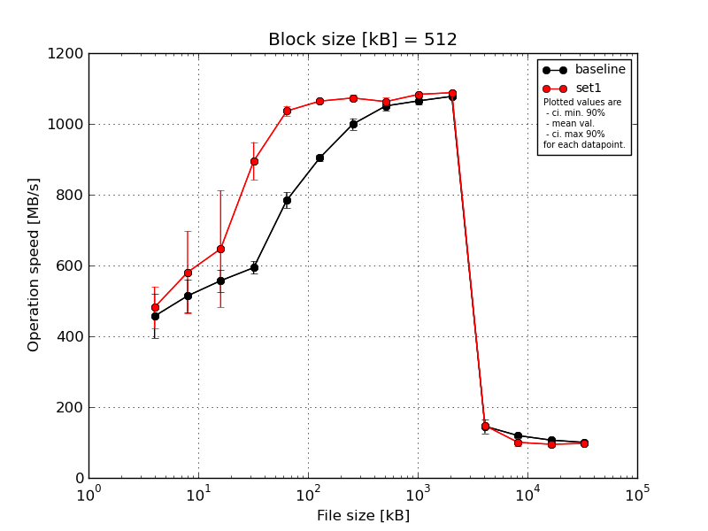
|
Block size [kB] |
File size [kB] |
| 512 |
1024 |
2048 |
4096 |
8192 |
16384 |
32768 |
65536 |
131072 |
262144 |
524288 |
1048576 |
2097152 |
4194304 |
| baseline | 512 | 496.63 | 531.07 | 601.69 | 626.46 | 816.33 | 888.93 | 1015.75 | 1063.26 | 1073.17 | 1084.49 | 109.4 | 116.27 | 106.5 | 100.67 |
| 512 | 396.23 | 442.31 | 522.6 | 588.51 | 776.17 | 905.64 | 1016.84 | 1058.12 | 1066.2 | 1081.65 | 160.7 | 116.47 | 106.43 | 100.23 |
| 512 | 523.01 | 550.38 | 579.37 | 589.28 | 773.4 | 902.17 | 993.21 | 1057.68 | 1077.28 | 1074.28 | 149.91 | 120.69 | 105.89 | 100.15 |
| 512 | 378.49 | 558.36 | 545.25 | 582.77 | 798.01 | 911.52 | 994.07 | 1028.74 | 1055.44 | 1072.44 | 153.41 | 123.16 | 107.3 | 100.03 |
| 512 | 490.7 | 489.26 | 536.64 | 582.42 | 756.64 | 911.83 | 976.53 | 1046.16 | 1054.04 | 1076.25 | 156.36 | 121.34 | 107.83 | 100.57 |
| mean val. |
457.01 |
514.27 |
557.11 |
593.89 |
784.11 |
904.02 |
999.28 |
1050.79 |
1065.23 |
1077.82 |
145.96 |
119.59 |
106.79 |
100.33 |
| standard dev. |
65.04 |
48.31 |
32.53 |
18.48 |
23.26 |
9.37 |
17.04 |
13.82 |
10.37 |
5.08 |
20.82 |
3.07 |
0.77 |
0.27 |
| ci. min. 90% |
395.0 |
468.22 |
526.09 |
576.27 |
761.93 |
895.09 |
983.04 |
1037.61 |
1055.34 |
1072.98 |
126.11 |
116.66 |
106.06 |
100.07 |
| ci. max 90% |
519.02 |
560.33 |
588.13 |
611.51 |
806.28 |
912.95 |
1015.52 |
1063.97 |
1075.12 |
1082.66 |
165.8 |
122.51 |
107.52 |
100.59 |
| geom. mean |
453.18 |
512.39 |
556.36 |
593.67 |
783.83 |
903.98 |
999.16 |
1050.72 |
1065.19 |
1077.81 |
144.6 |
119.55 |
106.79 |
100.33 |
| median |
490.7 |
531.07 |
545.25 |
588.51 |
776.17 |
905.64 |
994.07 |
1057.68 |
1066.2 |
1076.25 |
153.41 |
120.69 |
106.5 |
100.23 |
| first quartile |
396.23 |
489.26 |
536.64 |
582.77 |
773.4 |
902.17 |
993.21 |
1046.16 |
1055.44 |
1074.28 |
149.91 |
116.47 |
106.43 |
100.15 |
| third quartile |
496.63 |
550.38 |
579.37 |
589.28 |
798.01 |
911.52 |
1015.75 |
1058.12 |
1073.17 |
1081.65 |
156.36 |
121.34 |
107.3 |
100.57 |
| minimum |
378.49 |
442.31 |
522.6 |
582.42 |
756.64 |
888.93 |
976.53 |
1028.74 |
1054.04 |
1072.44 |
109.4 |
116.27 |
105.89 |
100.03 |
| maximum |
523.01 |
558.36 |
601.69 |
626.46 |
816.33 |
911.83 |
1016.84 |
1063.26 |
1077.28 |
1084.49 |
160.7 |
123.16 |
107.83 |
100.67 |
| set1 | 512 | 567.44 | 798.18 | 949.17 | 849.44 | 1061.42 | 1066.87 | 1080.24 | 1072.44 | 1088.31 | 1089.06 | 142.23 | 89.25 | 87.39 | 97.08 |
| 512 | 444.05 | 508.17 | 585.68 | 903.32 | 1040.87 | 1061.7 | 1060.09 | 1075.6 | 1080.85 | 1088.53 | 153.22 | 92.36 | 107.74 | 97.76 |
| 512 | 405.81 | 543.18 | 628.37 | 989.12 | 1025.63 | 1070.23 | 1083.09 | 1060.09 | 1088.88 | 1093.42 | 155.35 | 97.53 | 90.46 | 96.72 |
| 512 | 493.59 | 527.13 | 541.73 | 871.1 | 1029.85 | 1059.74 | 1076.25 | 1047.43 | 1081.18 | 1088.24 | 146.12 | 118.92 | 92.77 | 96.03 |
| 512 | 498.99 | 527.13 | 530.76 | 861.88 | 1023.94 | 1063.05 | 1066.56 | 1059.32 | 1078.55 | 1081.91 | 142.99 | 104.28 | 96.67 | 99.13 |
| mean val. |
481.97 |
580.76 |
647.14 |
894.97 |
1036.34 |
1064.32 |
1073.25 |
1062.98 |
1083.55 |
1088.23 |
147.98 |
100.47 |
95.01 |
97.34 |
| standard dev. |
61.17 |
122.18 |
173.21 |
56.28 |
15.49 |
4.21 |
9.65 |
11.32 |
4.71 |
4.11 |
5.98 |
11.78 |
7.88 |
1.18 |
| ci. min. 90% |
423.65 |
464.28 |
482.01 |
841.31 |
1021.57 |
1060.3 |
1064.04 |
1052.19 |
1079.06 |
1084.31 |
142.28 |
89.24 |
87.49 |
96.22 |
| ci. max 90% |
540.3 |
697.24 |
812.28 |
948.63 |
1051.11 |
1068.33 |
1082.45 |
1073.76 |
1088.05 |
1092.16 |
153.69 |
111.7 |
102.52 |
98.46 |
| geom. mean |
478.88 |
571.98 |
631.51 |
893.61 |
1036.25 |
1064.31 |
1073.21 |
1062.93 |
1083.55 |
1088.23 |
147.89 |
99.94 |
94.75 |
97.34 |
| median |
493.59 |
527.13 |
585.68 |
871.1 |
1029.85 |
1063.05 |
1076.25 |
1060.09 |
1081.18 |
1088.53 |
146.12 |
97.53 |
92.77 |
97.08 |
| first quartile |
444.05 |
527.13 |
541.73 |
861.88 |
1025.63 |
1061.7 |
1066.56 |
1059.32 |
1080.85 |
1088.24 |
142.99 |
92.36 |
90.46 |
96.72 |
| third quartile |
498.99 |
543.18 |
628.37 |
903.32 |
1040.87 |
1066.87 |
1080.24 |
1072.44 |
1088.31 |
1089.06 |
153.22 |
104.28 |
96.67 |
97.76 |
| minimum |
405.81 |
508.17 |
530.76 |
849.44 |
1023.94 |
1059.74 |
1060.09 |
1047.43 |
1078.55 |
1081.91 |
142.23 |
89.25 |
87.39 |
96.03 |
| maximum |
567.44 |
798.18 |
949.17 |
989.12 |
1061.42 |
1070.23 |
1083.09 |
1075.6 |
1088.88 |
1093.42 |
155.35 |
118.92 |
107.74 |
99.13 |
| baseline set1 difference |
5.46 % |
12.93 % |
16.16 % |
50.7 % |
32.17 % |
17.73 % |
7.4 % |
1.16 % |
1.72 % |
0.97 % |
1.39 % |
-15.99 % |
-11.03 % |
-2.98 % |
| ttest p-value |
0.5492 |
0.2906 |
0.2863 |
0.0 |
0.0 |
0.0 |
0.0 |
0.1657 |
0.007 |
0.0074 |
0.8395 |
0.0079 |
0.0105 |
0.0006 |
| ttest equality |
SAME |
SAME |
SAME |
DIFF |
DIFF |
DIFF |
DIFF |
SAME |
DIFF |
DIFF |
SAME |
DIFF |
DIFF |
DIFF |
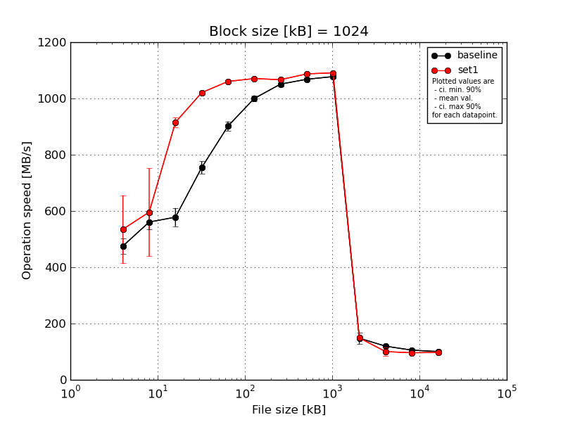
|
Block size [kB] |
File size [kB] |
| 1024 |
2048 |
4096 |
8192 |
16384 |
32768 |
65536 |
131072 |
262144 |
524288 |
1048576 |
2097152 |
4194304 |
| baseline | 1024 | 499.21 | 608.85 | 635.22 | 783.16 | 928.95 | 1014.08 | 1062.86 | 1067.48 | 1082.32 | 112.23 | 117.87 | 103.9 | 100.3 |
| 1024 | 462.96 | 557.28 | 575.61 | 769.02 | 884.95 | 1007.43 | 1053.25 | 1065.25 | 1081.89 | 161.44 | 121.72 | 106.64 | 100.85 |
| 1024 | 505.04 | 538.53 | 556.63 | 753.8 | 904.06 | 1001.41 | 1050.66 | 1064.2 | 1074.75 | 160.49 | 118.37 | 104.92 | 100.53 |
| 1024 | 477.07 | 554.77 | 574.23 | 724.56 | 888.93 | 991.91 | 1041.36 | 1064.32 | 1075.59 | 156.61 | 120.76 | 106.22 | 100.61 |
| 1024 | 433.66 | 543.94 | 548.83 | 741.85 | 902.48 | 985.58 | 1047.03 | 1080.28 | 1074.28 | 148.82 | 118.81 | 105.59 | 100.13 |
| mean val. |
475.59 |
560.67 |
578.1 |
754.48 |
901.87 |
1000.08 |
1051.03 |
1068.3 |
1077.77 |
147.92 |
119.51 |
105.46 |
100.49 |
| standard dev. |
28.92 |
28.01 |
33.92 |
22.85 |
17.26 |
11.49 |
7.97 |
6.82 |
3.99 |
20.56 |
1.65 |
1.09 |
0.28 |
| ci. min. 90% |
448.02 |
533.97 |
545.77 |
732.69 |
885.41 |
989.12 |
1043.43 |
1061.8 |
1073.96 |
128.32 |
117.93 |
104.42 |
100.22 |
| ci. max 90% |
503.16 |
587.38 |
610.44 |
776.27 |
918.33 |
1011.04 |
1058.64 |
1074.81 |
1081.57 |
167.52 |
121.08 |
106.49 |
100.75 |
| geom. mean |
474.87 |
560.13 |
577.34 |
754.2 |
901.74 |
1000.03 |
1051.01 |
1068.29 |
1077.76 |
146.62 |
119.5 |
105.45 |
100.49 |
| median |
477.07 |
554.77 |
574.23 |
753.8 |
902.48 |
1001.41 |
1050.66 |
1065.25 |
1075.59 |
156.61 |
118.81 |
105.59 |
100.53 |
| first quartile |
462.96 |
543.94 |
556.63 |
741.85 |
888.93 |
991.91 |
1047.03 |
1064.32 |
1074.75 |
148.82 |
118.37 |
104.92 |
100.3 |
| third quartile |
499.21 |
557.28 |
575.61 |
769.02 |
904.06 |
1007.43 |
1053.25 |
1067.48 |
1081.89 |
160.49 |
120.76 |
106.22 |
100.61 |
| minimum |
433.66 |
538.53 |
548.83 |
724.56 |
884.95 |
985.58 |
1041.36 |
1064.2 |
1074.28 |
112.23 |
117.87 |
103.9 |
100.13 |
| maximum |
505.04 |
608.85 |
635.22 |
783.16 |
928.95 |
1014.08 |
1062.86 |
1080.28 |
1082.32 |
161.44 |
121.72 |
106.64 |
100.85 |
| set1 | 1024 | 755.35 | 887.7 | 913.25 | 1024.6 | 1064.26 | 1069.44 | 1066.26 | 1089.2 | 1094.12 | 143.31 | 80.35 | 94.31 | 97.98 |
| 1024 | 486.59 | 535.61 | 912.61 | 1020.55 | 1059.12 | 1069.92 | 1068.38 | 1086.88 | 1092.43 | 145.75 | 105.69 | 106.32 | 96.04 |
| 1024 | 490.17 | 492.99 | 929.8 | 1007.95 | 1066.81 | 1073.43 | 1067.8 | 1090.06 | 1094.33 | 153.27 | 92.26 | 90.65 | 97.14 |
| 1024 | 512.76 | 519.88 | 932.39 | 1029.47 | 1056.1 | 1069.06 | 1072.21 | 1089.95 | 1091.99 | 147.32 | 120.05 | 97.01 | 95.38 |
| 1024 | 430.5 | 544.23 | 888.49 | 1021.08 | 1056.67 | 1072.24 | 1059.24 | 1080.93 | 1082.81 | 155.16 | 103.14 | 92.01 | 99.31 |
| mean val. |
535.07 |
596.08 |
915.31 |
1020.73 |
1060.59 |
1070.82 |
1066.78 |
1087.41 |
1091.14 |
148.96 |
100.3 |
96.06 |
97.17 |
| standard dev. |
126.81 |
164.18 |
17.55 |
7.98 |
4.74 |
1.92 |
4.75 |
3.84 |
4.76 |
5.05 |
14.92 |
6.22 |
1.56 |
| ci. min. 90% |
414.18 |
439.55 |
898.57 |
1013.12 |
1056.07 |
1068.99 |
1062.25 |
1083.75 |
1086.59 |
144.15 |
86.08 |
90.13 |
95.68 |
| ci. max 90% |
655.97 |
752.61 |
932.04 |
1028.34 |
1065.11 |
1072.64 |
1071.3 |
1091.06 |
1095.68 |
153.77 |
114.52 |
101.99 |
98.65 |
| geom. mean |
524.7 |
581.2 |
915.17 |
1020.7 |
1060.58 |
1070.82 |
1066.77 |
1087.4 |
1091.13 |
148.89 |
99.39 |
95.9 |
97.16 |
| median |
490.17 |
535.61 |
913.25 |
1021.08 |
1059.12 |
1069.92 |
1067.8 |
1089.2 |
1092.43 |
147.32 |
103.14 |
94.31 |
97.14 |
| first quartile |
486.59 |
519.88 |
912.61 |
1020.55 |
1056.67 |
1069.44 |
1066.26 |
1086.88 |
1091.99 |
145.75 |
92.26 |
92.01 |
96.04 |
| third quartile |
512.76 |
544.23 |
929.8 |
1024.6 |
1064.26 |
1072.24 |
1068.38 |
1089.95 |
1094.12 |
153.27 |
105.69 |
97.01 |
97.98 |
| minimum |
430.5 |
492.99 |
888.49 |
1007.95 |
1056.1 |
1069.06 |
1059.24 |
1080.93 |
1082.81 |
143.31 |
80.35 |
90.65 |
95.38 |
| maximum |
755.35 |
887.7 |
932.39 |
1029.47 |
1066.81 |
1073.43 |
1072.21 |
1090.06 |
1094.33 |
155.16 |
120.05 |
106.32 |
99.31 |
| baseline set1 difference |
12.51 % |
6.31 % |
58.33 % |
35.29 % |
17.6 % |
7.07 % |
1.5 % |
1.79 % |
1.24 % |
0.71 % |
-16.07 % |
-8.91 % |
-3.3 % |
| ttest p-value |
0.3364 |
0.6473 |
0.0 |
0.0 |
0.0 |
0.0 |
0.0053 |
0.0006 |
0.0013 |
0.9147 |
0.0211 |
0.0104 |
0.0016 |
| ttest equality |
SAME |
SAME |
DIFF |
DIFF |
DIFF |
DIFF |
DIFF |
DIFF |
DIFF |
SAME |
DIFF |
DIFF |
DIFF |
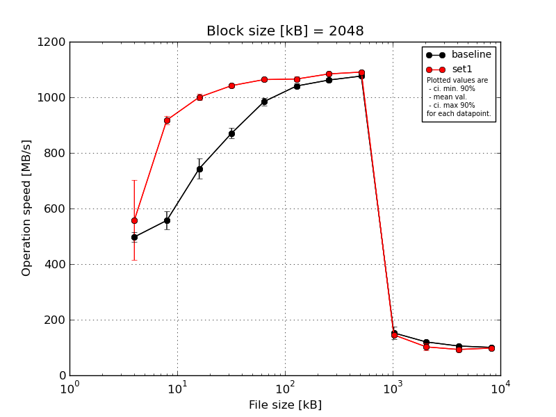
|
Block size [kB] |
File size [kB] |
| 2048 |
4096 |
8192 |
16384 |
32768 |
65536 |
131072 |
262144 |
524288 |
1048576 |
2097152 |
4194304 |
| baseline | 2048 | 523.41 | 600.41 | 784.08 | 887.08 | 997.07 | 1037.11 | 1064.28 | 1089.76 | 113.74 | 120.02 | 104.92 | 100.1 |
| 2048 | 482.61 | 522.93 | 761.17 | 893.51 | 996.41 | 1052.46 | 1055.81 | 1075.21 | 157.6 | 118.36 | 105.13 | 100.68 |
| 2048 | 508.01 | 576.54 | 759.81 | 864.87 | 989.67 | 1047.05 | 1058.44 | 1076.09 | 172.31 | 123.49 | 104.65 | 100.3 |
| 2048 | 480.64 | 560.78 | 690.25 | 848.27 | 964.78 | 1028.08 | 1057.16 | 1069.01 | 168.33 | 121.21 | 106.47 | 100.92 |
| 2048 | 493.83 | 524.67 | 721.23 | 861.28 | 974.72 | 1038.54 | 1074.72 | 1071.91 | 150.55 | 116.87 | 105.58 | 100.03 |
| mean val. |
497.7 |
557.07 |
743.31 |
871.0 |
984.53 |
1040.65 |
1062.08 |
1076.4 |
152.5 |
119.99 |
105.35 |
100.41 |
| standard dev. |
18.03 |
33.49 |
37.27 |
18.8 |
14.24 |
9.43 |
7.77 |
7.98 |
23.32 |
2.55 |
0.71 |
0.38 |
| ci. min. 90% |
480.51 |
525.14 |
707.78 |
853.08 |
970.96 |
1031.66 |
1054.67 |
1068.79 |
130.27 |
117.55 |
104.67 |
100.04 |
| ci. max 90% |
514.89 |
589.0 |
778.84 |
888.93 |
998.11 |
1049.63 |
1069.49 |
1084.0 |
174.74 |
122.43 |
106.03 |
100.77 |
| geom. mean |
497.44 |
556.26 |
742.55 |
870.84 |
984.45 |
1040.61 |
1062.06 |
1076.37 |
150.91 |
119.97 |
105.35 |
100.41 |
| median |
493.83 |
560.78 |
759.81 |
864.87 |
989.67 |
1038.54 |
1058.44 |
1075.21 |
157.6 |
120.02 |
105.13 |
100.3 |
| first quartile |
482.61 |
524.67 |
721.23 |
861.28 |
974.72 |
1037.11 |
1057.16 |
1071.91 |
150.55 |
118.36 |
104.92 |
100.1 |
| third quartile |
508.01 |
576.54 |
761.17 |
887.08 |
996.41 |
1047.05 |
1064.28 |
1076.09 |
168.33 |
121.21 |
105.58 |
100.68 |
| minimum |
480.64 |
522.93 |
690.25 |
848.27 |
964.78 |
1028.08 |
1055.81 |
1069.01 |
113.74 |
116.87 |
104.65 |
100.03 |
| maximum |
523.41 |
600.41 |
784.08 |
893.51 |
997.07 |
1052.46 |
1074.72 |
1089.76 |
172.31 |
123.49 |
106.47 |
100.92 |
| set1 | 2048 | 827.13 | 935.25 | 1008.31 | 1044.3 | 1066.63 | 1066.54 | 1088.16 | 1096.58 | 139.5 | 80.73 | 89.0 | 98.08 |
| 2048 | 511.91 | 930.89 | 1012.79 | 1046.84 | 1052.88 | 1070.89 | 1081.71 | 1088.74 | 147.93 | 103.81 | 106.36 | 97.14 |
| 2048 | 472.26 | 918.91 | 1003.28 | 1030.2 | 1070.13 | 1066.85 | 1082.82 | 1094.61 | 149.83 | 102.5 | 90.05 | 94.97 |
| 2048 | 500.88 | 898.63 | 992.56 | 1043.91 | 1062.73 | 1072.91 | 1081.15 | 1088.32 | 144.59 | 119.49 | 89.17 | 99.71 |
| 2048 | 478.02 | 906.64 | 985.1 | 1045.07 | 1066.49 | 1051.27 | 1087.03 | 1085.34 | 145.88 | 104.81 | 89.74 | 99.29 |
| mean val. |
558.04 |
918.06 |
1000.41 |
1042.07 |
1063.77 |
1065.69 |
1084.17 |
1090.72 |
145.55 |
102.27 |
92.87 |
97.84 |
| standard dev. |
151.3 |
15.56 |
11.4 |
6.73 |
6.63 |
8.5 |
3.2 |
4.69 |
3.92 |
13.87 |
7.56 |
1.9 |
| ci. min. 90% |
413.79 |
903.23 |
989.54 |
1035.65 |
1057.45 |
1057.58 |
1081.12 |
1086.24 |
141.8 |
89.05 |
85.66 |
96.03 |
| ci. max 90% |
702.29 |
932.9 |
1011.28 |
1048.48 |
1070.09 |
1073.8 |
1087.23 |
1095.19 |
149.29 |
115.49 |
100.07 |
99.65 |
| geom. mean |
544.53 |
917.96 |
1000.36 |
1042.05 |
1063.76 |
1065.66 |
1084.17 |
1090.71 |
145.5 |
101.47 |
92.64 |
97.82 |
| median |
500.88 |
918.91 |
1003.28 |
1044.3 |
1066.49 |
1066.85 |
1082.82 |
1088.74 |
145.88 |
103.81 |
89.74 |
98.08 |
| first quartile |
478.02 |
906.64 |
992.56 |
1043.91 |
1062.73 |
1066.54 |
1081.71 |
1088.32 |
144.59 |
102.5 |
89.17 |
97.14 |
| third quartile |
511.91 |
930.89 |
1008.31 |
1045.07 |
1066.63 |
1070.89 |
1087.03 |
1094.61 |
147.93 |
104.81 |
90.05 |
99.29 |
| minimum |
472.26 |
898.63 |
985.1 |
1030.2 |
1052.88 |
1051.27 |
1081.15 |
1085.34 |
139.5 |
80.73 |
89.0 |
94.97 |
| maximum |
827.13 |
935.25 |
1012.79 |
1046.84 |
1070.13 |
1072.91 |
1088.16 |
1096.58 |
149.83 |
119.49 |
106.36 |
99.71 |
| baseline set1 difference |
12.12 % |
64.8 % |
34.59 % |
19.64 % |
8.05 % |
2.41 % |
2.08 % |
1.33 % |
-4.56 % |
-14.77 % |
-11.85 % |
-2.56 % |
| ttest p-value |
0.4017 |
0.0 |
0.0 |
0.0 |
0.0 |
0.0023 |
0.0004 |
0.0086 |
0.529 |
0.0228 |
0.0062 |
0.0179 |
| ttest equality |
SAME |
DIFF |
DIFF |
DIFF |
DIFF |
DIFF |
DIFF |
DIFF |
SAME |
DIFF |
DIFF |
DIFF |
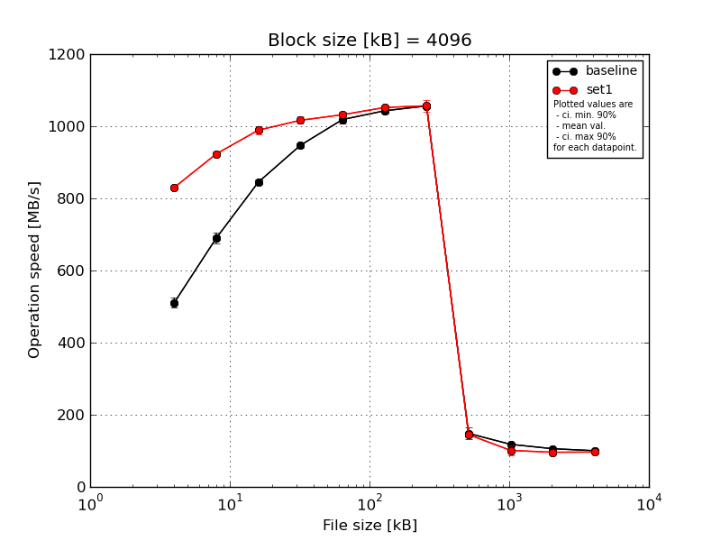
|
Block size [kB] |
File size [kB] |
| 4096 |
8192 |
16384 |
32768 |
65536 |
131072 |
262144 |
524288 |
1048576 |
2097152 |
4194304 |
| baseline | 4096 | 512.36 | 704.47 | 847.19 | 953.35 | 1032.44 | 1049.3 | 1063.33 | 119.88 | 116.81 | 105.85 | 100.17 |
| 4096 | 500.81 | 695.34 | 857.08 | 953.77 | 1022.74 | 1034.31 | 1058.65 | 159.44 | 115.72 | 105.49 | 100.98 |
| 4096 | 519.02 | 701.76 | 840.03 | 945.38 | 1012.95 | 1046.8 | 1055.31 | 153.53 | 116.34 | 105.35 | 100.13 |
| 4096 | 529.59 | 679.64 | 835.29 | 943.84 | 1004.33 | 1036.32 | 1047.62 | 163.79 | 119.63 | 106.02 | 100.4 |
| 4096 | 491.87 | 668.23 | 844.86 | 938.88 | 1020.08 | 1047.31 | 1056.17 | 145.06 | 121.62 | 106.77 | 100.15 |
| mean val. |
510.73 |
689.89 |
844.89 |
947.04 |
1018.51 |
1042.81 |
1056.22 |
148.34 |
118.02 |
105.9 |
100.37 |
| standard dev. |
14.84 |
15.47 |
8.21 |
6.42 |
10.56 |
6.94 |
5.73 |
17.39 |
2.51 |
0.56 |
0.36 |
| ci. min. 90% |
496.58 |
675.14 |
837.06 |
940.93 |
1008.44 |
1036.19 |
1050.76 |
131.76 |
115.64 |
105.37 |
100.02 |
| ci. max 90% |
524.88 |
704.64 |
852.71 |
953.16 |
1028.58 |
1049.43 |
1061.68 |
164.92 |
120.41 |
106.43 |
100.71 |
| geom. mean |
510.56 |
689.75 |
844.86 |
947.03 |
1018.46 |
1042.79 |
1056.21 |
147.46 |
118.0 |
105.89 |
100.36 |
| median |
512.36 |
695.34 |
844.86 |
945.38 |
1020.08 |
1046.8 |
1056.17 |
153.53 |
116.81 |
105.85 |
100.17 |
| first quartile |
500.81 |
679.64 |
840.03 |
943.84 |
1012.95 |
1036.32 |
1055.31 |
145.06 |
116.34 |
105.49 |
100.15 |
| third quartile |
519.02 |
701.76 |
847.19 |
953.35 |
1022.74 |
1047.31 |
1058.65 |
159.44 |
119.63 |
106.02 |
100.4 |
| minimum |
491.87 |
668.23 |
835.29 |
938.88 |
1004.33 |
1034.31 |
1047.62 |
119.88 |
115.72 |
105.35 |
100.13 |
| maximum |
529.59 |
704.47 |
857.08 |
953.77 |
1032.44 |
1049.3 |
1063.33 |
163.79 |
121.62 |
106.77 |
100.98 |
| set1 | 4096 | 823.39 | 928.62 | 990.47 | 1014.88 | 1039.53 | 1056.33 | 1064.67 | 144.09 | 91.32 | 92.0 | 96.84 |
| 4096 | 835.78 | 915.67 | 985.69 | 1014.72 | 1030.45 | 1048.44 | 1057.67 | 151.19 | 106.08 | 106.74 | 96.63 |
| 4096 | 834.4 | 924.01 | 1000.87 | 1034.23 | 1040.16 | 1050.78 | 1071.93 | 136.47 | 85.74 | 92.72 | 98.14 |
| 4096 | 825.94 | 916.49 | 970.58 | 1011.92 | 1028.58 | 1056.16 | 1028.41 | 155.46 | 124.26 | 95.75 | 96.27 |
| 4096 | 831.26 | 931.63 | 997.81 | 1006.67 | 1020.8 | 1047.71 | 1061.13 | 137.71 | 98.71 | 92.99 | 95.06 |
| mean val. |
830.15 |
923.28 |
989.08 |
1016.48 |
1031.9 |
1051.88 |
1056.76 |
144.98 |
101.22 |
96.04 |
96.59 |
| standard dev. |
5.35 |
7.12 |
11.94 |
10.46 |
8.11 |
4.14 |
16.71 |
8.29 |
14.98 |
6.15 |
1.11 |
| ci. min. 90% |
825.06 |
916.49 |
977.7 |
1006.51 |
1024.17 |
1047.94 |
1040.84 |
137.08 |
86.94 |
90.18 |
95.53 |
| ci. max 90% |
835.25 |
930.07 |
1000.47 |
1026.46 |
1039.63 |
1055.83 |
1072.69 |
152.88 |
115.51 |
101.9 |
97.65 |
| geom. mean |
830.14 |
923.26 |
989.03 |
1016.44 |
1031.88 |
1051.88 |
1056.66 |
144.8 |
100.37 |
95.89 |
96.58 |
| median |
831.26 |
924.01 |
990.47 |
1014.72 |
1030.45 |
1050.78 |
1061.13 |
144.09 |
98.71 |
92.99 |
96.63 |
| first quartile |
825.94 |
916.49 |
985.69 |
1011.92 |
1028.58 |
1048.44 |
1057.67 |
137.71 |
91.32 |
92.72 |
96.27 |
| third quartile |
834.4 |
928.62 |
997.81 |
1014.88 |
1039.53 |
1056.16 |
1064.67 |
151.19 |
106.08 |
95.75 |
96.84 |
| minimum |
823.39 |
915.67 |
970.58 |
1006.67 |
1020.8 |
1047.71 |
1028.41 |
136.47 |
85.74 |
92.0 |
95.06 |
| maximum |
835.78 |
931.63 |
1000.87 |
1034.23 |
1040.16 |
1056.33 |
1071.93 |
155.46 |
124.26 |
106.74 |
98.14 |
| baseline set1 difference |
62.54 % |
33.83 % |
17.07 % |
7.33 % |
1.32 % |
0.87 % |
0.05 % |
-2.26 % |
-14.24 % |
-9.31 % |
-3.76 % |
| ttest p-value |
0.0 |
0.0 |
0.0 |
0.0 |
0.0546 |
0.0363 |
0.9465 |
0.7071 |
0.0385 |
0.0073 |
0.0001 |
| ttest equality |
DIFF |
DIFF |
DIFF |
DIFF |
DIFF |
DIFF |
SAME |
SAME |
DIFF |
DIFF |
DIFF |
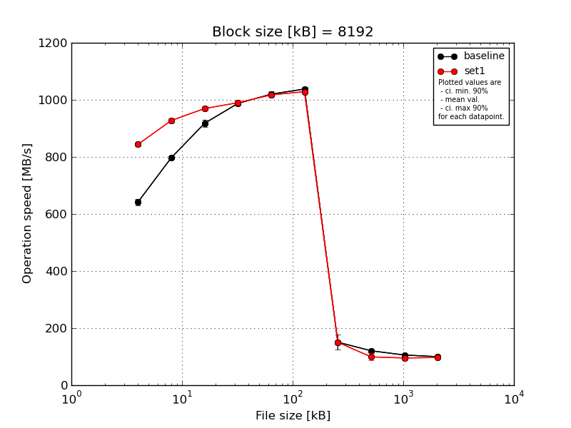
|
Block size [kB] |
File size [kB] |
| 8192 |
16384 |
32768 |
65536 |
131072 |
262144 |
524288 |
1048576 |
2097152 |
4194304 |
| baseline | 8192 | 661.42 | 802.82 | 938.86 | 989.18 | 1027.53 | 1048.96 | 110.22 | 123.26 | 106.31 | 100.04 |
| 8192 | 639.23 | 797.33 | 915.25 | 995.94 | 1032.6 | 1036.87 | 155.86 | 123.66 | 106.35 | 99.81 |
| 8192 | 640.92 | 788.77 | 919.6 | 993.45 | 1009.5 | 1038.34 | 185.74 | 120.08 | 104.97 | 99.97 |
| 8192 | 633.01 | 798.79 | 901.2 | 982.69 | 1009.43 | 1027.76 | 153.95 | 119.53 | 106.18 | 100.03 |
| 8192 | 634.97 | 798.29 | 914.5 | 976.73 | 1021.1 | 1038.19 | 148.66 | 116.64 | 105.42 | 99.86 |
| mean val. |
641.91 |
797.2 |
917.88 |
987.6 |
1020.03 |
1038.02 |
150.89 |
120.63 |
105.84 |
99.94 |
| standard dev. |
11.36 |
5.16 |
13.6 |
7.88 |
10.47 |
7.52 |
26.96 |
2.9 |
0.62 |
0.1 |
| ci. min. 90% |
631.08 |
792.28 |
904.92 |
980.08 |
1010.05 |
1030.85 |
125.18 |
117.87 |
105.25 |
99.84 |
| ci. max 90% |
652.74 |
802.12 |
930.84 |
995.11 |
1030.01 |
1045.2 |
176.59 |
123.4 |
106.44 |
100.04 |
| geom. mean |
641.83 |
797.19 |
917.8 |
987.57 |
1019.99 |
1038.0 |
148.83 |
120.61 |
105.84 |
99.94 |
| median |
639.23 |
798.29 |
915.25 |
989.18 |
1021.1 |
1038.19 |
153.95 |
120.08 |
106.18 |
99.97 |
| first quartile |
634.97 |
797.33 |
914.5 |
982.69 |
1009.5 |
1036.87 |
148.66 |
119.53 |
105.42 |
99.86 |
| third quartile |
640.92 |
798.79 |
919.6 |
993.45 |
1027.53 |
1038.34 |
155.86 |
123.26 |
106.31 |
100.03 |
| minimum |
633.01 |
788.77 |
901.2 |
976.73 |
1009.43 |
1027.76 |
110.22 |
116.64 |
104.97 |
99.81 |
| maximum |
661.42 |
802.82 |
938.86 |
995.94 |
1032.6 |
1048.96 |
185.74 |
123.66 |
106.35 |
100.04 |
| set1 | 8192 | 849.81 | 919.64 | 962.64 | 981.0 | 1008.18 | 1022.36 | 149.92 | 88.79 | 97.2 | 99.11 |
| 8192 | 841.33 | 928.23 | 969.08 | 980.27 | 1017.49 | 1029.46 | 150.69 | 88.67 | 106.4 | 97.36 |
| 8192 | 847.27 | 939.19 | 981.38 | 1004.62 | 1023.75 | 1033.8 | 159.61 | 96.55 | 96.0 | 92.56 |
| 8192 | 833.51 | 927.86 | 966.97 | 994.71 | 1022.26 | 1028.52 | 145.81 | 120.33 | 89.31 | 99.88 |
| 8192 | 848.0 | 923.31 | 967.73 | 989.96 | 1015.02 | 1029.46 | 146.48 | 102.07 | 87.72 | 96.67 |
| mean val. |
843.98 |
927.65 |
969.56 |
990.11 |
1017.34 |
1028.72 |
150.5 |
99.28 |
95.33 |
97.11 |
| standard dev. |
6.66 |
7.36 |
7.04 |
10.14 |
6.22 |
4.1 |
5.51 |
13.05 |
7.43 |
2.86 |
| ci. min. 90% |
837.63 |
920.63 |
962.85 |
980.44 |
1011.41 |
1024.81 |
145.25 |
86.84 |
88.24 |
94.39 |
| ci. max 90% |
850.34 |
934.66 |
976.27 |
999.78 |
1023.27 |
1032.63 |
155.76 |
111.72 |
102.41 |
99.84 |
| geom. mean |
843.96 |
927.62 |
969.54 |
990.07 |
1017.32 |
1028.71 |
150.42 |
98.64 |
95.1 |
97.08 |
| median |
847.27 |
927.86 |
967.73 |
989.96 |
1017.49 |
1029.46 |
149.92 |
96.55 |
96.0 |
97.36 |
| first quartile |
841.33 |
923.31 |
966.97 |
981.0 |
1015.02 |
1028.52 |
146.48 |
88.79 |
89.31 |
96.67 |
| third quartile |
848.0 |
928.23 |
969.08 |
994.71 |
1022.26 |
1029.46 |
150.69 |
102.07 |
97.2 |
99.11 |
| minimum |
833.51 |
919.64 |
962.64 |
980.27 |
1008.18 |
1022.36 |
145.81 |
88.67 |
87.72 |
92.56 |
| maximum |
849.81 |
939.19 |
981.38 |
1004.62 |
1023.75 |
1033.8 |
159.61 |
120.33 |
106.4 |
99.88 |
| baseline set1 difference |
31.48 % |
16.36 % |
5.63 % |
0.25 % |
-0.26 % |
-0.9 % |
-0.25 % |
-17.7 % |
-9.94 % |
-2.83 % |
| ttest p-value |
0.0 |
0.0 |
0.0001 |
0.6732 |
0.6344 |
0.0413 |
0.9759 |
0.0073 |
0.0135 |
0.0581 |
| ttest equality |
DIFF |
DIFF |
DIFF |
SAME |
SAME |
DIFF |
SAME |
DIFF |
DIFF |
DIFF |
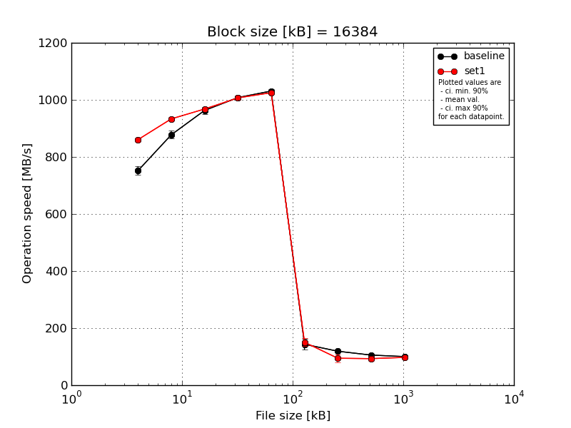
|
Block size [kB] |
File size [kB] |
| 16384 |
32768 |
65536 |
131072 |
262144 |
524288 |
1048576 |
2097152 |
4194304 |
| baseline | 16384 | 775.58 | 899.68 | 969.53 | 1013.59 | 1043.05 | 109.94 | 116.31 | 104.54 | 100.01 |
| 16384 | 753.08 | 878.2 | 945.05 | 1003.72 | 1030.4 | 158.88 | 120.98 | 106.35 | 100.37 |
| 16384 | 753.36 | 877.17 | 977.86 | 1003.13 | 1031.56 | 154.58 | 119.69 | 104.53 | 100.34 |
| 16384 | 744.37 | 859.2 | 954.08 | 1000.8 | 1024.47 | 151.95 | 118.39 | 105.3 | 100.14 |
| 16384 | 732.87 | 873.69 | 968.7 | 1018.77 | 1025.21 | 142.3 | 119.98 | 107.17 | 100.74 |
| mean val. |
751.85 |
877.59 |
963.05 |
1008.0 |
1030.94 |
143.53 |
119.07 |
105.58 |
100.32 |
| standard dev. |
15.68 |
14.51 |
13.21 |
7.76 |
7.45 |
19.74 |
1.8 |
1.16 |
0.28 |
| ci. min. 90% |
736.91 |
863.76 |
950.46 |
1000.6 |
1023.84 |
124.71 |
117.36 |
104.47 |
100.06 |
| ci. max 90% |
766.8 |
891.42 |
975.64 |
1015.41 |
1038.04 |
162.34 |
120.78 |
106.68 |
100.58 |
| geom. mean |
751.72 |
877.49 |
962.97 |
1007.98 |
1030.92 |
142.32 |
119.06 |
105.57 |
100.32 |
| median |
753.08 |
877.17 |
968.7 |
1003.72 |
1030.4 |
151.95 |
119.69 |
105.3 |
100.34 |
| first quartile |
744.37 |
873.69 |
954.08 |
1003.13 |
1025.21 |
142.3 |
118.39 |
104.54 |
100.14 |
| third quartile |
753.36 |
878.2 |
969.53 |
1013.59 |
1031.56 |
154.58 |
119.98 |
106.35 |
100.37 |
| minimum |
732.87 |
859.2 |
945.05 |
1000.8 |
1024.47 |
109.94 |
116.31 |
104.53 |
100.01 |
| maximum |
775.58 |
899.68 |
977.86 |
1018.77 |
1043.05 |
158.88 |
120.98 |
107.17 |
100.74 |
| set1 | 16384 | 858.56 | 938.3 | 965.25 | 1015.63 | 1022.52 | 148.71 | 92.25 | 83.79 | 96.72 |
| 16384 | 852.65 | 930.29 | 966.93 | 1001.25 | 1025.03 | 173.95 | 82.51 | 105.48 | 98.59 |
| 16384 | 873.21 | 940.26 | 977.29 | 1014.96 | 1033.48 | 144.92 | 88.0 | 96.67 | 95.53 |
| 16384 | 854.71 | 922.7 | 965.32 | 1000.84 | 1023.74 | 147.93 | 119.95 | 93.41 | 96.78 |
| 16384 | 863.66 | 935.43 | 964.94 | 1002.02 | 1021.05 | 137.05 | 89.92 | 86.25 | 99.71 |
| mean val. |
860.56 |
933.4 |
967.95 |
1006.94 |
1025.17 |
150.51 |
94.53 |
93.12 |
97.47 |
| standard dev. |
8.22 |
7.06 |
5.28 |
7.64 |
4.88 |
13.89 |
14.66 |
8.65 |
1.66 |
| ci. min. 90% |
852.72 |
926.67 |
962.91 |
999.66 |
1020.52 |
137.27 |
80.55 |
84.87 |
95.88 |
| ci. max 90% |
868.4 |
940.13 |
972.98 |
1014.23 |
1029.82 |
163.75 |
108.51 |
101.37 |
99.05 |
| geom. mean |
860.53 |
933.38 |
967.94 |
1006.92 |
1025.16 |
150.02 |
93.71 |
92.8 |
97.45 |
| median |
858.56 |
935.43 |
965.32 |
1002.02 |
1023.74 |
147.93 |
89.92 |
93.41 |
96.78 |
| first quartile |
854.71 |
930.29 |
965.25 |
1001.25 |
1022.52 |
144.92 |
88.0 |
86.25 |
96.72 |
| third quartile |
863.66 |
938.3 |
966.93 |
1014.96 |
1025.03 |
148.71 |
92.25 |
96.67 |
98.59 |
| minimum |
852.65 |
922.7 |
964.94 |
1000.84 |
1021.05 |
137.05 |
82.51 |
83.79 |
95.53 |
| maximum |
873.21 |
940.26 |
977.29 |
1015.63 |
1033.48 |
173.95 |
119.95 |
105.48 |
99.71 |
| baseline set1 difference |
14.46 % |
6.36 % |
0.51 % |
-0.11 % |
-0.56 % |
4.86 % |
-20.61 % |
-11.8 % |
-2.85 % |
| ttest p-value |
0.0 |
0.0001 |
0.463 |
0.8329 |
0.1852 |
0.5358 |
0.0059 |
0.0128 |
0.0053 |
| ttest equality |
DIFF |
DIFF |
SAME |
SAME |
SAME |
SAME |
DIFF |
DIFF |
DIFF |